Operating Systems
This part inlcudes important topics in OS.
Content outline
- 操作系统概述
- 定义：一个一直运行在计算机上的程序，作为用户程序和底层硬件的中间层，对计算机资源进行管理
- 操作系统功能
- 用户的角度
- 对于使用PC或者手持设备的用户:操作系统主要是为了用户使用方便，优化用户所进行的工作，保证性能
- 对于手持设备还涉及到电池电量的管理
- 对于使用终端（与大型机和小型机相连）的用户:操作系统优化资源使用率，并且保证用户只使用权限内的资源
- 对于工作站用户而言，操作系统对个人使用性能和资源利用率进行折中
- 另外对于一些嵌入式的计算机（例如家电、汽车内的），这些设备基本没有用户交互的接口。
- 系统的角度
- 操作系统是一种资源分配器:它管理计算机内的资源（这些资源用来解决CPU时间、内存空间、文件存储空间、I/O设备等问题）
，并且决定如何有效公平地处理冲突的资源请求。
- 操作系统是一种控制程序，它控制程序的运行，防止计算机资源错误或使用不当
- Multiprogramming和Multitasking
- Multiprogramming
即多道程序设计技术，是指在内存同时放若干道程序，使它们在系统中并发执行，共享系统中的各种资源。当一道程序暂停执行时，CPU立即转去执行另一道程序。设计的目的是让CPU总是有程序执行，而不是等待，从而提高效率。
- Multitasking
即多任务，即在多个任务同时进行或者来回不断切换进行的状态。多任务可以让CPU迅速在不同的任务间切换，让用户可以在每个程序运行时和其交互（反应时间很短），从而多用户可以共享同一台计算机。
- 系统调用
- 定义：操作系统提供的有效服务访问接口
- 系统调用和API
- 系统调用：类似于函数调用，但运行于内核态，其服务例程位于内核中，通过系统调用访问操作系统服务
- API：应用程序接口，以库函数的方式存在，适用于应用程序员，屏蔽了系统调用所做的事情，可以认为是系统调用的集合，其参数传递更简单，也可以认为是系统调用和应用程序之间的中间层。另外系统调用不同OS形式不同，但API可以移植。
- 系统调用工作过程：Dual Mode
- 过程：当调用系统调用时，通过中断、陷阱，对硬件位清位，进入内核态，服务完成后，对硬件置位回到用户态
- 意义：防止用户程序引发内核错误，只允许一些操作例如I/O等在内核态下通过服务例程进行，让内核可以保护自己，避免系统崩溃
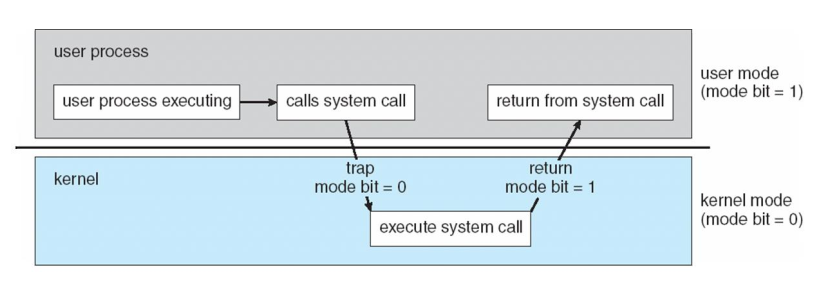
- OS的功能组成部分(帮助理解与归纳)
- 进程管理：操作、调度、进程间通信、同步
- 内存管理：主存、虚存
- 大容量存储管理：文件系统、磁盘调度、I/O
- 其他：安全...
- 操作系统服务
- 方便用户的服务
- 用户界面 / User Interface
- 程序执行 / Program Execution
- I/O操作 / I/O Operation
- 文件系统操作 / File-system Manipulation
- 进程间通信 / Communications
- 错误检测 / Error Detection
- 保证效率的服务
- 资源分配 / Resource Allocation
- 统计 / Accounting
- 保护和安全 / Protection and Security
- 系统调用/System Calls
- 操作系统结构
- 简单结构(Simple Structure)：MS-DOS
无良好定义的结构，没有模块之分，在最小的空间内提供最多的服务
- 整体式结构(Monolithic)：UNIX
系统程序+内核，有限分层
- 分层结构(Layered Approach)
- 微内核(Microkernel)：Mach
将所有非基本部分从内核移除，实现为系统程序或者用户程序，微内核主要功能是消息传递，使各种服务通信，因此也会带来开销
- 模块(Modules)：
核心内核+可加载内核模块，任何一个模块都可以加载任何一个模块且不需要调用消息传递来通信，核心内核只有核心功能以及其他模块加载和通信的相关信息
- 混合式(Hybrid)：Mac OS X kernel, Windows, Linux
优缺点对比
| 对比项 |
简单结构 |
整体式 |
分层 |
微内核 |
模块 |
| 主要实现 |
没有良好定义的结构，用最小的空间提供最多的功能，所有功能都集成在内核中，并且应用程序可以直接访问硬件接口 |
有限的分层结构，分为(系统)程序和内核，内核包括系统调用接口以下、硬件接口以上的所有功能 |
将操作系统分为很多层，每一层都建立在低一层的基础上，每一层由数据结构和操作定义了功能 |
尽量将功能从内核空间移到用户空间，并通过内核态下的消息传递让各进城通信 |
内核只包含最核心的部分以及模块加载信息，通过加载模块来实现启动或运行时功能，各模块也可加载其他模块，无需消息传递 |
| 优点 |
空间小 |
内核集成大量功能，性能好 |
实现、debug方便
内层对外层透明 |
容易在用户空间扩展功能
小内核容易移植
很多功能在用户空间，内核代码量少，更安全可靠 |
灵活
不需要消息传递的开销 |
| 缺点 |
程序可直接访问I/O底层接口，对异常程序敏感 |
实现、维护困难 |
定义各层具体功能的问题
层数多会导致效率下降 |
用户空间到内核内通信带来的效率下降 |
略 |
- 操作系统设计与实现
- 设计目标 → 没有唯一解决方案
- 系统目标和规格：批处理、分时、单用户、多用户、分布式、实时、通用目标
- 用户目标：容易使用、学习、可靠、安全、快速
- 系统目标：容易设计、实现、维护，灵活、可靠、高效、没有错误
- 机制(Mechanism)和策略(Policy)的分离
- 机制：怎么做
- 策略：做什么
- 例子：机制是需要一个程序优先级机制 策略是CPU密集型程序优先级大于I/O密集型程序或者相反
- 优点：机制与策略无关，允许用户创建内核模块等或用户程序来增加策略或者机制。
- 具体实现：汇编、C、C++
- 进程
- 进程的概念
- 进程(Process)与程序(Program)
- 程序：一段静态代码
- 进程：代码的执行实例，当一个程序被加载进入内存后，它就成为了进程；进程是动态的
- 内存中的进程-进程包含的内容
- 用户空间内容：用于进程的运行 vs.内核空间内容：用于进程管理，可通过系统调用来访问
- 文本段：代码
- 数据段：全局变量
- 栈：临时数据，如函数参数、返回地址、本地变量
- 堆：动态分配内存空间
- 程序计数器、寄存器内容(在PCB内，内核空间内容)
- 两者关系：内核使用PCB管理进程，而进程在用户空间运行，调用getpid、fork、wait、exec等从而调用系统调用进入内核态，对PCB进行相关操作
- 进程状态
- 新的(new)：进程正在被创建
- 运行(running)：指令正在被执行，此状态已获得CPU资源，在任何一个CPU上，某时刻只有一个进程在运行
- 等待(waiting)：进程正在等待某事件发生，例如I/O结束、临界资源被释放。
- 就绪(ready)：进程正在等待被分配给某CPU，此时需要进程调度
- 终止(terminated)：进程结束执行
- 注意：
- 就绪状态实际上是在等待CPU，阻塞状态实际上是在等待除了CPU以外的其他资源。
- 从运行到阻塞状态由进程自己调用阻塞原语，从阻塞到运行状态由其他进程(例如释放I/O的进程，释放临界资源的进程)调用唤醒原语。唤醒是指将进程从阻塞状态加入就绪队列，而不是指从就绪队列调度，变为运行状态。
- 进程控制块/process control block
内核中表示、定位、管理进程的数据结构，用双向链表组织
- 进程状态
- 程序计数器
- CPU寄存器
- CPU调度信息
- 内存管理信息
- I/O状态信息，打开文件列表
- 记账信息：CPU时间，使用时间，时间界限...
- 进程的用户时间和系统时间
- 原因：进程的运行是在用户空间和内核空间不断切换的过程，通过系统调用从用户空间进入内核空间
- 总运行时间计算方法：系统运行总时间（性能）= 用户时间 + 系统时间
注：实际时间可能会更长，因为涉及到上下文切换
- 注意：编写程序时要同时考虑用户时间和系统时间，因为某些系统调用（如阻
塞系统调用）会花费相当长的时间，这些时间为进程的系统时间(因为在内核态)
- 尽量减少外设访问次数，例如合并几个printf，一次打印几次的内容
- 读文件按块读而非字节
- ...

- 进程操作
系统提供的用于进程辨识、创建进程、执行程序、结束进程的工具。
- getpid()
进入内核空间，查询PCB中的pid，并返回
- 进程创建
- init进程
- 过程：当系统启动时，创建的第一个进程-init，此进程作为进程树的根，创建更多进程
- 进程树
- 查看：pstree 命令
- reparent过程：
- 过程：当孤儿进程出现，以init作为其新的parent
- 意义：保证进程树只有一棵，并且在孤儿进程结束时有办法得知并对PCB进行管理、调查
- fork() - "Cell division"
- 过程：复制，修改，父子进程按调度运行(无法预测顺序)
- 系统修改的内容：pid、运行时间、调用返回值、父进程的孩子指针和子进程的父指针
- 系统没有修改的内容：用户空间进程数据（完全复制，包括代码段、全局变量、局部变量、动态分配空间）、打开文件指针列表(例如标准输出，从而输出在同一个终端)、PC等CPU寄存器内容
fork()调用复制PCB并更新子进程PCB
 fork()调用不对用户空间进程的相关数据做修改，只是复制
fork()调用不对用户空间进程的相关数据做修改，只是复制
- exec*()函数族 - Go to another program and no return
- 过程：调用exec，搜索目标程序(用于替换的)，替换调用进程代码，运行至结束，并不返回替换前程序，但是如果exec调用失败，那么返回原来的程序
- 使用方法：execl(program directory,1st arg,2nd arg,...,NULL)
- 系统修改的内容：用户空间进程数据（包括代码段、全局变量、局部变量、动态分配空间）、PC等CPU寄存器的内容
- 系统没有修改的内容：pid、运行时间、父子关系(指针)
exec()系统调用搜索目标程序，更新用户空间进程数据
- wait()
- 完成任务：挂起父进程，等待任意子进程结束，唤醒父进程，杀死僵尸进程，管理资源
- 过程：
- 设置信号处理服务例程，当收到SIGCHLD信号则对其进行处理。默认情况下，所有的进程都对SIGCHLD没有反应。
- 子进程结束前调用了wait()：阻塞直到子进程结束，执行例程
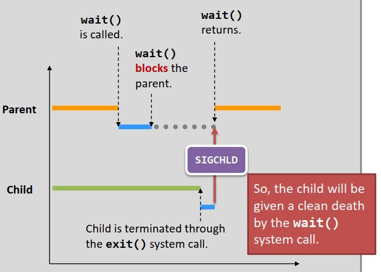
- 子进程结束后调用了wait()：信号已经存在，无需阻塞，直接设置并执行例程
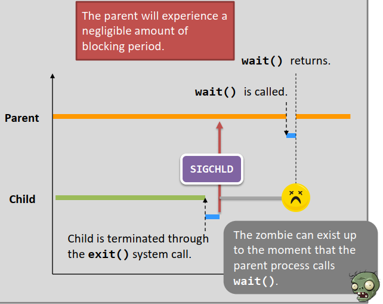
- 收到SIGCHLD，移接收并移除SIGCHLD，销毁子进程(PCB)。
- 移除服务例程，开始无视SIGCHLD，继续执行，返回子进程pid。
- 意义：非常重要，防止僵尸进程堆积而占据资源（pid是有限的），有效的进行系统资源管理
- 局限性：会响应任何一个子进程的SIGCHLD -> waitpid()
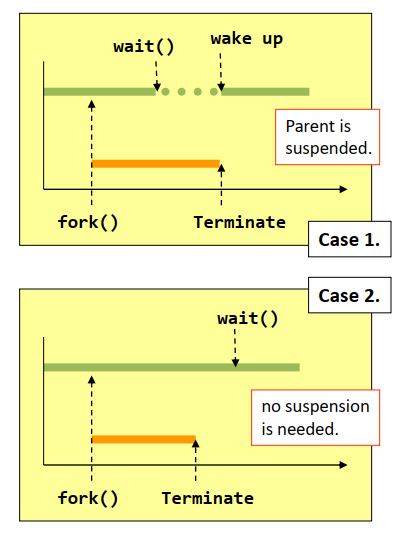
- exit()
- 完成任务：结束进程，让进程成为僵尸进程，回收资源，并唤醒父进程
- 过程
- 回收大部分的内核空间分配的存储空间
- 回收所有用户空间分配的存储空间
- 子进程发出SIGCHLD软件中断信号通知父进程自己的结束，成为僵尸进程(terminated state)
- 僵尸进程和terminated state
- 出现情况：exit、从主函数return(隐式调用exit)、异常结束(内核检测到异常结束，调用exit())
- 意义：PCB仍包含一部分信息，用于OS管理、回收、处理、统计
- Linux系统僵尸进程标签：[defunct]
- 特殊情况注意：
父进程异常结束，未调用wait()，出现孤儿僵尸进程，init进行reparent并定期调用wait()以清除此类进城
- system() = fork + exec + wait + exit
- 线程
- 基本概念：CPU使用的基本单元
- 线程包括的内容：tid、PC、寄存器集合、栈
- 线程共享的内容：代码段、数据段（全局变量）、动态分配空间以及打开文件、信号等
- 线程私有的内容：栈（局部变量）以及PC、寄存器集合
- 线程函数：线程开始的特定函数，线程无法返回到线程函数的调用函数
多线程进程用户空间：
注意：各线程的共享进程的地址空间
- 为什么需要多线程(multi-threading)？
- 进程执行多个任务：多数软件都是多线程的，不同线程负责不同任务。
- 处理相似并发请求：单线程进程处理并发请求会导致处理请求的时间过长。而线程是轻量级的，进程是重量级的，如果创建新进程处理请求，
耗费时间资源。故通过多线程，共享资源，高效处理相似（相似表示执行相同任务，会用到相同资源）的并发请求。
- 提高运行效率：单线程进程只能运行在一个CPU上；现代多核计算机包含多CPU，以线程为单位使用CPU，可以让每个进程并行运行在不同处理器上。
- 多线程优点
- 响应度高
多线程让应用程序可以同时执行多个任务(multi-tasking)，当一个线程被阻塞，其他线程可以与用户交互。
- 资源共享
线程默认共享所属进程的内存和资源（例如代码段、文件打开列表），一个应用程序可以在同一地址空间有多个不同的活动线程。
- 经济
创建进程所需的内存和资源、切换进程所需的时间比创建、切换线程更昂贵。
- 多处理器体系利用：
单线程进程只能运行在一个CPU上；现代多核计算机包含多CPU，以线程为单位使用CPU，可以让每个进程并行运行在不同处理器上。
- 多线程的挑战
- 区分同时运行的不同的任务
- 均分、平衡不同线程的工作量
- 数据分发
- 数据的互斥(mutual exclusion)与同步(synchronization)
- 测试和debug
- 多线程模型
- 用户线程和内核线程
参考
| 对比项 |
用户线程 |
内核线程 |
| 理解 |
在用户空间利用线程库实现多线程，线程在进程内竞争资源，受内核支持而无须内核管理，即内核调度的对象仍是进程 |
在内核空间实现多线程，内核调度的对象是线程，内核通过TCB感知管理线程，其创建开销小于进程 |
| 优点 |
线程切换不需要陷入内核，开销小 |
同进程线程可以被分配到各个处理器上并行执行
线程被阻塞不会导致同进程其他线程被阻塞
内核本身也可以用多线程方式实现 |
| 缺点 |
每个时刻单核上只有一个进程的一个线程在执行
某线程系统调用、中断等将导致整个进程被阻塞 |
同进程不同线程的切换也需要陷入内核，切换慢于用户级线程 |
- 多对一模型：许多用户级线程映射到一个内核级线程（也可认为是一个进程结构）
- 优点：切换效率更高（线程管理由线程库在用户空间完成）、内核更容易实现
- 缺点：
- 一个用户线程阻塞将导致整个进程阻塞
- 由于任意时刻只有一个进程的一个线程能访问内核，所以多个用户线程实际上不能并行运行在多处理器上
例子：旧UNIX，Green thread
- 一对一模型：每个用户级线程映射到一个内核级线程结构或者进程结构
- 优点：并发程度高、某线程阻塞不会阻塞其他线程
- 缺点：限制了系统支持的线程数量（每创建一个用户线程就要创建一个相应的内核线程）、上下文切换开销大(需要陷入内核)
例子：Linux，Windows
- 多对多模型：用户线程映射到相同数量或更少数量的内核线程上
- 优点：并发性高，虽然相较一对一模型没有增加并发性（内核一次还是只能调度一个内核线程），但相较多对一模型，用户线程可执行时间变多；可以创建任意多用户线程。
- 多线程编程
- 显式多线程：线程库-创建和管理线程的API(运行在内核态或者用户态)
- 创建线程类型
- 异步线程:多个线程独立同时运行，很少进行数据共享
- 同步线程：父线程等待子线程结束，大量数据共享（fork-join）
- Pthread库：POSIX标准的线程创建、同步API
- 线程创建：线程以一个指定的函数（线程函数）开始，父线程在join处阻塞等待子进程结束，join返回
- pthread_create(&tid,线程属性,函数名,函数参数)
- 例子：pthread_create(&tid,NULL,hello,"hello world")，其中主线程中的tid变量存放创建的子线程号，子线程不存在tid这个变量(执行线程函数，线程局部变量独立)
- 传递参数：
- 传值：各线程栈独立，互不影响
- 传指针：注意线程函数若以指针为参数，那么线程修改指针指向内容会引起所有线程（包括父线程）相关变量值的变更
- 说明：
- 与fork()不同的是，需要指明线程从哪个函数开始执行
- 线程属性若为非分离的，那么线程结束时未完全释放资源，也未完全终止，在join返回时才完全释放，或者设置分离属性，线程结束时立即释放
- pthread_join(tid,用户定义指针)
- 说明：用户定义指针用于指向被等待线程的返回值，pthread_join返回值为0表示成功，失败返回错误号
- 等待多个线程返回：注意pthread_join的特点，要指定等待的tid -> pthread_join(tid,NULL) in a loop
- pthread_exit(output) -> pthread_join(tid,(void**)&output)
- 作用：将全局变量指针或堆指针（pass by reference not value，例如这里exit函数的参数output必须是一个指针）返回给父线程，父线程用一个指向指针的指针(output是一个指针，用它的地址作为join的参数)来存放，从而通过指针使用子线程处理好的数据
- 隐式多线程：创建、管理线程由编译器和运行时库完成
好处：编程容易，bug少
- 线程池:创建一定数量的线程等待工作
好处：
- 用已存在的线程比创建一个线程来服务请求更快
- 线程池限制了应用所拥有的线程数，防止无限请求无限创建线程，线程池空请求只能等待线程
- OpenMP：编译制导
- 多线程引起的一些问题-特殊处理
- fork()和exec()的语义
- fork()语义：
- 新进程复制所有线程。这种情况应该适用于fork()之后不调用exec()的应用。
- 新进程只复制调用线程。这种情况应适用于fork()之后调用exec()的应用
- exec()语义：指定程序替换整个进程，作用于所有线程
- 线程取消
- 异步取消：一个线程立即终结目标线程
- 同步取消：目标线程不断检查自身是否可以终止，在取消点安全、有序终止自身
- 优点/缺点：
- 异步取消在目标线程更新与其他线程共享数据时十分麻烦
- 由于操作系统并不回收线程所有资源，异步取消也不能使已分配的资源空闲
- pthread线程取消方式
- 默认为deferred(同步)，通过pthread_cancel()请求取消,通过pthread_testcancel()来设置撤销点，取消线程只会发生在取消点
| Mode |
是否允许取消 |
| Off |
Disabled |
| Deferred |
Enabled |
| Asynchronous |
Enabled |
- 信号处理
- 信号：UNIX中用于通知进程某事件已经发生，信号产生后被发送到进程，一旦产生必须进行处理
- 信号接收方式/信号类型
- 同步接收：同步信号被送到产生信号的同一进程，例子有非法访问内存或被0所除
- 异步接收：异步信号一般被送到另一个进程，例子有使用特殊键和计时器到期
- 信号处理
- 默认信号处理程序（在内核中对信号进行处理）
- 用户定义的信号处理程序
- 信号传递的目标线程（对于多线程进程而言）
- 发送信号到信号所应用的线程
- 发送信号到进程内每个线程
- 发送信号到线程内某些固定线程
- 规定一个特定线程以接收进程的所有信号
- 例子：信号发送方法取决于信号类型。同步信号应送到产生信号的线程，异步信号不一定，有的可能要发送到所有线程，例如Ctrl+C按键产生的信号。
- 发送信号函数
- UNIX标准发送信号的函数：kill(pid,signal)
- POSIX Pthread发送信号到特定线程：pthread_kill(tid,signal)
- 线程特定数据(TLS)：线程拥有的属于自己的数据拷贝(线程内的"static"变量)
- 理解：TLS是属于线程的一份数据，可以理解为static类型的数据，但不是static数据，因为static在内存管理层面放在data段，与全局变量一视同仁，同进程线程都能访问，但是从功能的角度可以理解为线程内的static数据，线程内所有函数共享，其粒度介于全局变量（同进程线程共享）和局部变量（栈，仅单个函数内可见）之间
- 作用：提供更细致粒度的数据范围的控制，线程内部函数均可见TLS，并且这份数据属于单个线程，适合一些应用场景(例如事务处理的情况)下每个线程需要一份单独的数据
- 进程通信与同步
合作进程 -> 进程间通信（IPC）
竞争条件 -> 进程间同步 -> 最终方案：信号量 -> 死锁和三个典型问题
- 合作进程（Cooperating process）
- 概念：与独立进程比较，合作进程与其他进程共享数据，会被其他进程影响
- 优点：
- 实现关键：IPC
- IPC-进程间通信
- 概念：进程间交换数据的过程
- 实现方法：
- 共享存储（shared memory）
- 实现方法（三要素）：生产者(至少一个)、消费者(至少一个)、buffer（一个共享的循环队列）
- 特点：通过routine访问共享对象，比较快
- 实现方法中的问题->buffer的要求
- bounded buffer
- 对于producer：producer向buffer写入但buffer已满 -> producer被挂起，consumer出队一个元素后唤醒producer
- 对于consumer：consumer从buffer读取但buffer已空 -> consumer被挂起，producer入队一个元素后唤醒consumer
- undounded buffer
- 适合场景：不同进程在同一台机器上
- 消息传递（message passing）
- 实现方法：建立连接->send/receive operation
- 特点：需要内核干预，适合分布式系统
- 实现方法中的问题（逻辑实现）：
- 命名问题
| 命名方式 |
实现方式 |
操作 |
特点 |
| 显式/直接沟通 |
显示命名彼此 |
send/receive(msg) |
指明对方并建立连接（两者之间只存在一个连接）以通信，但是这会导致编程困难 |
| 隐式/间接沟通 |
从邮箱或者说端口收发消息 |
send/receive(A,msg) |
两者有共享的邮箱，一个连接可能与多个进程对有关，一个进程对可以有多个连接 |
- 同步问题-关于send和receive的实现
- 同步：阻塞接收和发送
- blocking send：直到msg被确认收到才继续发送
- blocking receive：在收到msg之前阻塞
- 异步：非阻塞接收和发送
- unblocking send：发送msg然后恢复
- unblocking receive：收到有效msg或者null
- 组合
- 同步+同步：产生会话，无需buffer
- 其他组合需要buffer：
- 零容量buffer：停-等
- 有限buffer：sender发送窗口有限
- 无限buffer：sender无限发送
- IPC具体实例
- POSIX共享内存 - memory-mapped file
- 核心思想：生产者消费者模型 + 建立内存映像文件
- 特点：通过读写操作直接访问共享对象的区域
- 生产者操作：
创建共享内存对象(即调用共享对象打开的函数)-配置对象大小-建立内存映像文件-文件操作
- 消费者操作：
打开共享对象-建立内存映像文件-文件操作-移除共享对象
- 套接字Socket
- 管道Pipe - A shared object
管道让进程以生产者-消费者模型沟通。
- 普通管道/匿名管道
- 文件标识符：在文件系统中无名
- 使用对象：父-子进程间，子进程从父进程继承管道的文件描述符，进程要在同一机器上
- 方向：单向（当然也是单工的）
- 存活期：进程间沟通结束后消失
- 命名管道
- 文件标识符：在文件系统中有名字
- 使用对象：无需父-子进程关系，进程要在同一机器上，多进程共享
- 方向：双向（但是半双工的）
- 存活期：在被完全删除前一直存在
- UNIX管道
- 匿名管道：特殊的共享文件，子进程从父进程继承文件描述符，父进程关闭读端使用写端，子进程关闭写端使用读端
调用：pipe(fd[]),fork(),read(),write(),close()
- 命名管道：内核空间的一个FIFO，
调用：mkfifo(),open(),read(),write(),close
- 竞争条件(Race Condition)
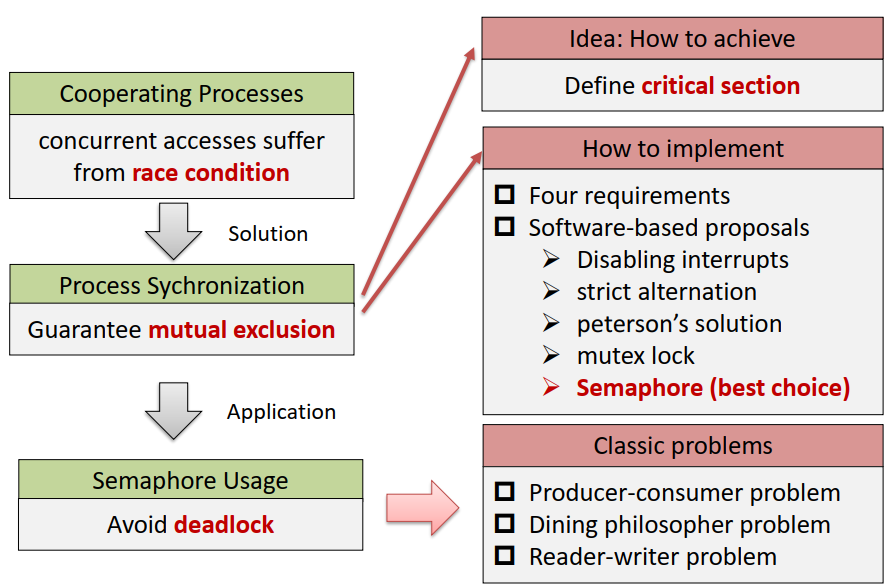
- 定义：程序执行的结果决定于共享资源某个特定的被访问次序，不同的访问次序可能造成不同结果。
- 例子：对共享对象的同时访问会造成意想不到的结果，上下文切换的不同引起最终结果不同，OS内资源共享(打开文件...)，multithreading共享全局变量、分配的空间
- 特点：99%结果正确，1%结果错误 -> 难以debug
- 避免方法：进程间同步/synchronization
- 竞争条件解决办法：进程间同步 - 互斥
- 核心思想：互斥(Mutual Exclusion)
- 互斥的概念：某一时刻只有一个进程可以进行对共享对象的访问（这里的访问指的是一系列操作）。
- 互斥的实现：
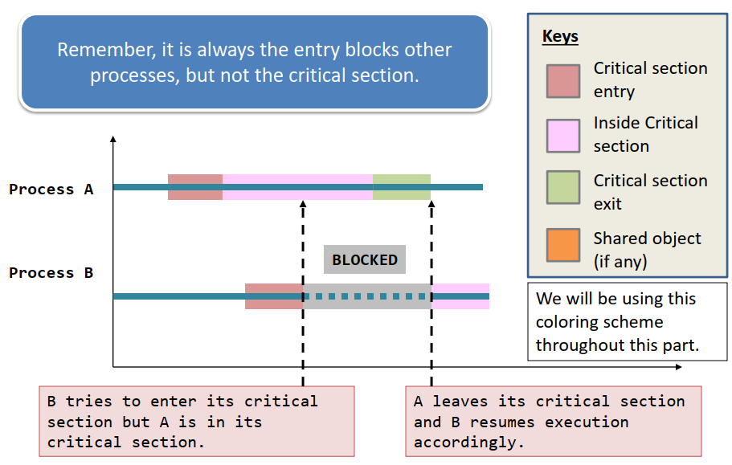
- 不可抢占内核（不通用）：对于SMP比较容易设计，但不通用，且不利于快速响应、实时编程。
- 临界区（critical zone）
- 定义：进程代码中操作一个或多个共享对象的一段代码。当进程在临界区内执行时，其他的进程不允许进入它们的临界区执行，不同进程临界区是不同的。临界区应该是紧凑的。
- 框架：section entry(实际上进程被阻塞的位置) + critical section + section exit + remainder section
- E-E(entry-exit)实现的四个要求：
- E-E包含的临界区是互斥的，不能有两个进程同时出现在临界区内(忙则等待)
- 假定进程执行速度不为0，但是不应该对n个进程的相对速度和CPU数量做任何假定（不能用进程在临界区内时间来决定退出或进入）
- 进展(progress)：在临界区外(即在剩余区)的进程之间不应阻塞彼此，即如果临界区没有进程，那么只有不在剩余区执行的进程(即在entry、exit)能参与谁下一个进入临界区的选举(空闲让进)
- 不能饿死(有限等待/bounded waiting)
- 额外要求：即最好不要忙等，如果无法进入临界区则立刻释放处理器(让权等待)
- E-E的硬件实现：
- 原子指令：由硬件完成，伪代码只是为了展示过程
- TestAndSet()：返回lock现在的值，并更新lock为true。若lock本身为false，那么进入临界区的同时将lock变为true；退出临界区修改lock为false
- swap()：原子交换两个变量的值。初始化进程局部变量key为true，利用swap交换lock和key的值，当key为true(即钥匙无法用于锁的时候)，重复交换；只有当lock为false时，钥匙才会变为false，而lock变为true，此时相当于钥匙作用于锁，成功进入临界区，
其他的进程仍发现不能将钥匙作用于锁，无法进入临界区
- 不可中断：进入临界区前禁用上下文切换，出临界区开启上下文切换
缺点：
- 多核均被禁用 -> 在多核的体系中会导致资源严重浪费且不现实
- 降低并行度
- 将关中断权利交给用户可能导致系统停止
- E-E的软件实现：
- 互斥锁(Mutex Lock)：进入临界区前申请获取锁，离开临界区释放锁。其中互斥锁是一个共享对象，并且申请和释放是原子的，因此常常是硬件指令。
缺点：
- 造成忙等(busy waiting)，浪费CPU资源，但是如果临界区执行的时间比较短（即锁被持有的时间段比较短）那么可以忽略这一点。
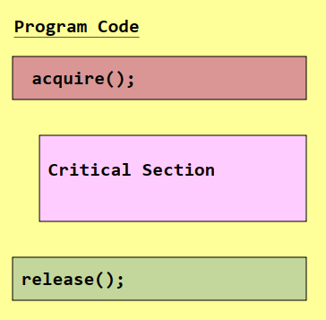
- 严格轮转(Strict Alternation)：turn作为共享对象，所有进程排成队列，严格轮流进入临界区
缺点：
- 造成忙等(busy waiting)，浪费CPU资源
- 过于严格，必须轮流进入，每一轮每个进程只能进入一次临界区
- 违反E-E实现的要求progress，即某在剩余区的进程可能会阻塞其他进程进入临界区
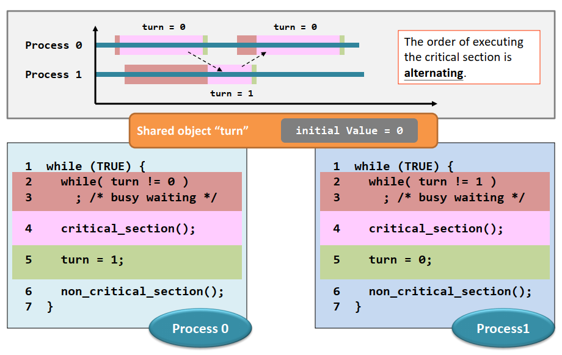
- Peterson算法（两个进程）：turn和interested[2]作为共享对象
- 如何证明Peterson算法满足：互斥、前进、有限等待？考虑两个进程while条件的情况
- 算法理解-三种情况：
- 如果轮到别人并且别人感兴趣：让别人先进入
- 如果别人不感兴趣：不管到没到我，我都进入
- 如果没轮到别人：不管别人感不感兴趣，我都进入
- 造成忙等(busy waiting)，浪费CPU资源
- 优先级反转/自旋锁（指会发生忙等的锁），实际上只要存在忙等现象，就可能有优先级反转
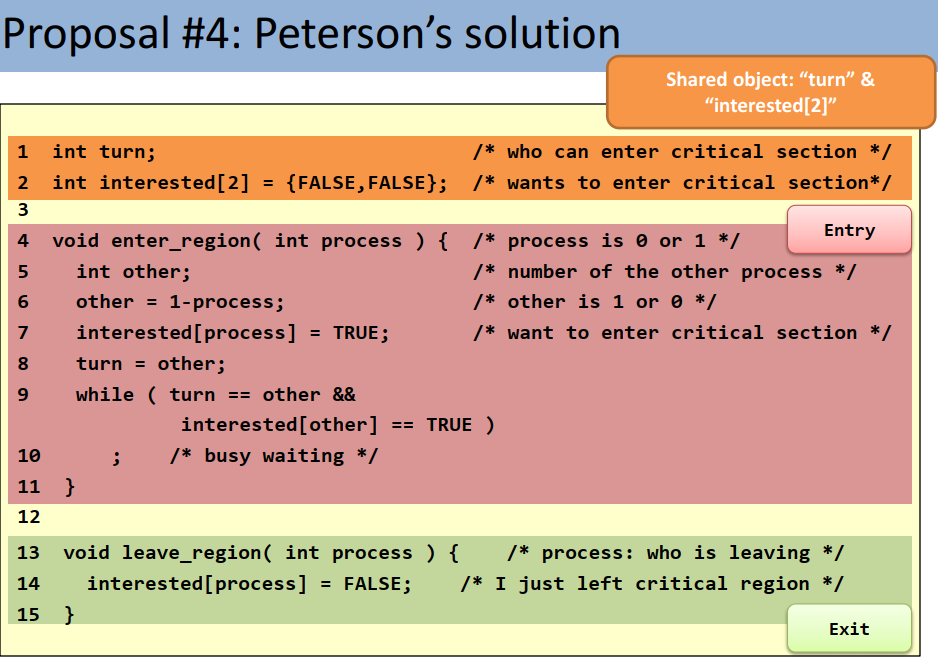
除了信号量外，其他四种解法的问题总结：
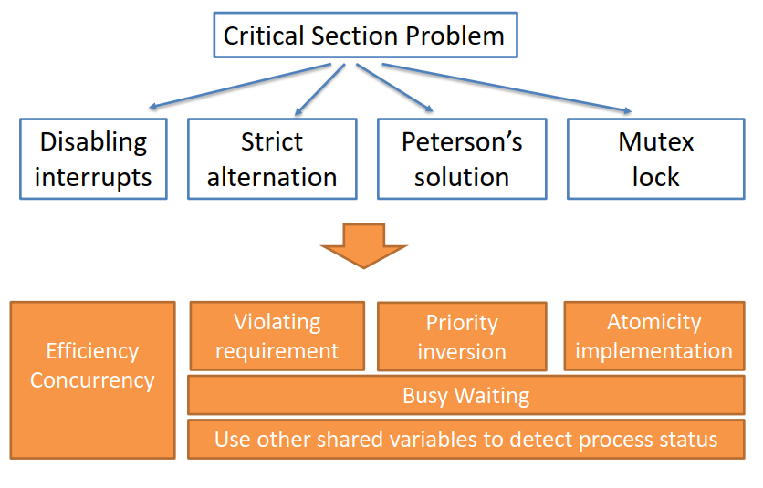
- 信号量(semaphore)：即令牌数，记录了共享对象数量，其作为共享对象 -> 最终解决方案
- 定义：一种数据类型（int,maybe more than int），一个共享对象，其记录进程操纵需要的空闲共享对象数量
- 唯二操作：down()/up()，也可叫wait()/signal()或者叫P/V操作 -> 都是原子的，即原语，是操作系统低级的进程通信原语
- 类型：二进制、计数型(有一定数量的资源)
- 实现的两个问题：忙等和原子标准操作
- 忙等：阻塞进程而不是忙等，即把进程放入等待队列 -> sleep & wake
- 原子标准操作：禁止抢占，即进入函数关闭上下文切换，离开函数打开上下文切换(对于进入函数和离开函数都是如此)
- 优点
- 通过挂起解决了忙等的问题
- 虽然使用了禁止中断，但是禁止中断的临界区比较短，对性能影响有限
- 可适用于共享资源数量大于1的情况
临界区实现方法对比
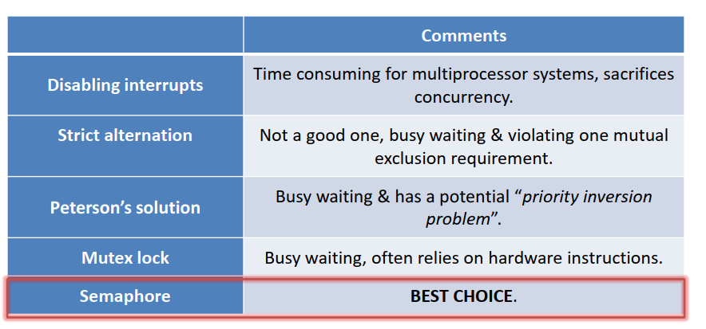
- 互斥最好方法-信号量的使用问题：死锁(Dead Lock)
- 概念：进程互相需要彼此持有的资源，导致没有进程能获得资源并离开section entry进入临界区，即竞争资源造成的僵局称为死锁
- 根本原因：
- 系统资源竞争：不可剥夺资源数量不足以满足多个进程的需要，使得进程在运行时争夺资源陷入僵局
- 进程推进顺序非法：请求、释放资源的顺序不当，例如A、B各持有一种资源并且需要对方资源、A、B各持有一个信号量而需要对方信号量继续执行
- 必要条件：即如果要发生死锁，必须有以下条件
- 互斥：某个资源实体在某时刻只能被某一个进程使用
- 持有并等待(Hold and wait)：持有至少一项资源并等待其他资源
- 无抢占：即资源只能由当前持有者在section exit自愿释放
- 循环等待(Circular wait)：P0 waits for P1,...,Pn-1 waits for Pn,Pn waits for P0
- 解决方法
- 预防：破坏必要条件
- 破坏互斥条件：不可行
- 破坏不可剥夺：若请求资源得不到满足时，必须释放已持有的资源(剥夺)。会增加开销，适用于易于获取释放的资源(CPU等)，不是用于打印机等。
- 破坏持有并请求：一次性分配所有资源，即进程最开始需要的、运行过程中又申请的一开始全部分配给进程。会降低资源利用率，也可能造成“饥饿”。
- 破坏循环等待：给资源编号，同类资源一次申请完，不同类资源必须先申请低层次资源再申请高层次资源(即若持有高级资源必须先释放掉才能申请低级资源)，即限定了各进程申请资源的顺序，避免形成循环。各设备的编号固定，添加新设备困难；可能有进程使用资源的顺序与统一的层次划分不同，低层次资源空闲从而浪费。
- 避免：在资源动态分配过程中，防止系统进入不安全状态，与预防的方法区分
- 银行家算法：
- 系统状态：由(E,A,C,R)四个向量定义
- E：存在的资源数量
- A：未被使用的资源数量
- C：各进程已分配得到的资源数量
- R：各进程需要的资源数量
- 安全/不安全系统状态：存在/不存在可行执行序列（判断方法同检测恢复中第二种情况），即用空闲资源先满足一个进程，此进程执行完释放所有资源，再接着下一个进程...
- 注：
- 安全状态一定没有死锁
- 不安全状态不代表一定发生死锁，只是有这种可能性，如果某些进程又释放了一些资源，可能存在可行执行序列
- 死锁一定处于不安全状态，即此时没有可行的执行序列
- 算法：周期性检查系统状态，对于新的请求，请求后状态为安全则接受，不安全则拒绝。即限定了进程的执行顺序，与限定进程申请资源的顺序(即必须先申请低层次再申请高层次)区别。
需要用到：各进程已得到数量、各进程需求量、当前空闲的资源
- 检测、解除：发生死锁之后检测并解决死锁
- 检测：资源分配图(两种边、两种节点)与死锁定理
- 无有向圈 -> 无死锁
- 有有向圈且每种资源只有一个实体 -> 有死锁
- 有有向圈且每种资源有多个实体 -> 可能有死锁
- 解除
- 资源剥夺法：剥夺死锁进程的资源，分配给其他死锁进程。
- 撤销进程法：撤销一个或多个死锁进程并剥夺资源。
- 进程回退法：将死锁进程回退到回避死锁的地步，进程自愿释放资源。
- 忽略（鸵鸟算法）：停止工作，手动重启
- 优点：开销低，容易实现 -> 由于死锁发生频率小，检测、避免开销大，得不偿失
- 注：以上解决方法能解决死锁问题，但不一定能解决饿死(优先级)问题
- 死锁问题：资源分配是否有可行的方案，至少两个进程，一定是阻塞进程(等待资源)
- 饥饿问题：进程调度顺序，至少一个进程，可以是就绪进程或者阻塞进程(一直得不到调度)
- 信号量应用场景：三个典型IPC问题模型
- 生产者-消费者问题
- 三要素：producer + consumer + bounded buffer
- 两个要求
- 生产者：产生资源，队满时挂起，消费者在队满时消费了资源那么将其唤醒
- 消费者：消费资源，队空时挂起，生产者在队空时产生了资源那么将其唤醒
- 解决方法：pipe（前面已经有过总结）或者semaphore+shared object(buffer)
- 子问题1：互斥 -> 二进制信号量mutex
- 子问题2：同步 -> 计数型信号量full和empty
- 实现逻辑
- 逻辑：
- 生产者：生产者产生一个新的资源，检查buffer是否满(down(empty))，满则挂起，不满则申请锁；申请不到则挂起，申请到则进入临界区；临界区内访问buffer，向其中插入一个元素；释放锁并up(full)
- 消费者：消费者检查buffer是否空(down(full))，空则挂起，不空则申请锁；申请不到则挂起，申请到则进入临界区；临界区内访问buffer，从其中获取一个元素；释放锁并up(empty)，处理得到的元素
- 本质：
- 生产者将item插入队列前先把空位置减一，把item插入后再把满位置加一，保证消费者看到有item时一定是item已插入队列，并且自己检查的是保证更新好的空位数量
- 消费者将item移出队列前先把满位置减一，把item移出后再把空位置加一，保证生产者看到有空位时一定是item已移出队列，并且自己检查的是保证更新好的占用位数量
- 可能存在问题：
调换生产者section entry内empty和mutex进行down()的顺序可能会引起死锁 -> 队满，生产者需要empty但持有mutex，消费者需要mutex但持有empty，形成循环等待
- 哲学家就餐问题
- 问题描述(要素)：哲学家思考（剩余区）和吃饭（临界区），吃饭时哲学家i同时需要筷子i和(i+1)%N
- 问题要求（子问题）
- 不完善的解决方法：
- 方案一
- 实现：筷子作为共享对象，每个人吃前先后down(i)和down(i+1%N)，吃完先后up(i)和up(i+1%N)
- 示意图：
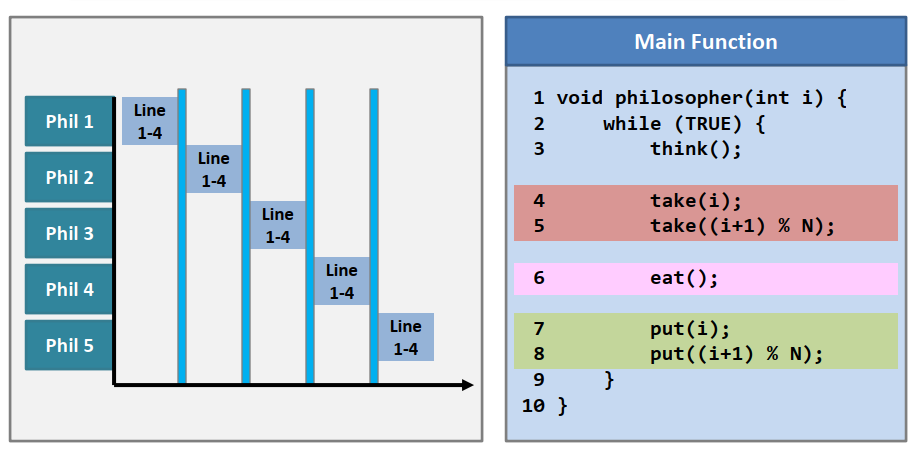
- 问题：一人拿一支筷子 -> 死锁
- 方案二：
- 实现：方案一的改进，筷子作为共享对象，每个人吃前先down(i)，在这之后如果发现(i+1)%N被拿走，将i放回并sleep一段时间(退避时间)
- 示意图：
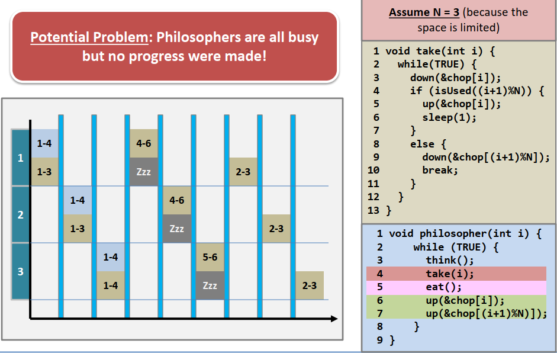
- 问题：0拿0 -> ... -> n拿n -> 0放回0并睡觉 -> ... -> n放回n并睡觉
存在执行顺序，所有的哲学家都忙着拿筷子、放筷子、睡觉，但是没有任何进展，饿死
- 最终解决方法：
- 信号量：
- 哲学家的状态state作为共享对象：EATING/THINKING/HUNGRY
- 二进制信号量mutex对state进行互斥
- 二进制信号量数组s（s[i]代表哲学家i是否有吃的许可证，初始值应该是0）
- 实现方法：
- section entry逻辑：获取mutex，修改自身state为hungry，并检测（test(i)）自己是否能获得令牌并进行给自己令牌的发送，然后释放锁，最后down令牌，若发现没有令牌则阻塞，等待左右两边的哲学家发给自己令牌，否则直接开始吃饭
- section exit 逻辑：获取mutex，修改自身state为thinking，并检测左右哲学家是否能获得令牌以及发送给他们令牌，然后释放锁
- test(i)：测试哲学家是否能获得吃饭令牌以及发送令牌，当i的state为hungry且左右哲学家都不在吃饭时，修改i状态为eating，并为i添加令牌，否则不修改状态和令牌（状态保持hungry，令牌保持为0）
- 读者-写者问题
- 问题描述：读者、写者对同一个数据库进行访问
- 问题要求（子问题）：
- 子问题1：互斥（database是共享对象）
- 子问题2：同步问题
- 子问题3：并发问题
多读者并发读允许
- 解决方法：
- 信号量：
- db是database的二进制信号量，读者写者共享信号量db以达到读写、写写互斥
- mutex二进制信号量是read_count共享对象的锁，读者共享信号量mutex和read_count，互斥地访问read_count，对正在阅读的读者量计数
- 写者函数逻辑：section entry部分准备好写入，然后down(db)；临界区写；section exit执行up(db)即可
- 读者函数逻辑：section entry部分申请mutex，对read_count加1，若发现自己是第一个读者，则down(db)，释放mutex；临界区读；section exit部分申请mutex，对read_count减1，若发现自己是最后一个读者，则up(db)，释放mutex
- 该解决方法存在的问题：
- 未限制读者写者数量、权限，且给予了读者更高的优先级，因为只要有读者读，就不允许写者写，必须等到所有读者读完
- 解决方法-优先级：写者申请db前先申请一个wait_flag二进制信号量，新读者section entry先对wait_flag进行判断(即可能阻塞在最开始)，若为0接着进行；若为1则读者挂起(与信号量down类似，只不过不需要对信号量减1)，即发现写者等待，那么给写者让路(即阻塞直到写者不等待)。写者释放db后释放wait_flag，这样等待的写者被唤醒，接着进入临界区
- 解决方法-读者量：设置计数型信号量position，在读者获取mutex后down(position)，在读者释放mutex前up(position)
- 有可能出现read_count为1，但是实际上没有读者在临界区内的情况
- 情况出现条件：刚对read_count++即上下文切换到写者。写者获取db，此时无读者在读但是read_count==1
- 情况判断：
- read_count==1且mutex=0，并且写者在写，即是这种情况
- read_count==1且mutex=1，此时写者必然无法获取db，这表示一个读者在读
- 不可能出现read_count>1但没有读者在读的情况，因为read_count>1说明至少有一个读者经历了section entry，已经在临界区内了
- 进程调度
- 进程调度的意义：
有很多进程处于不同的状态，而CPU资源是有限的，进程调度有利于提高CPU利用率（CPU比I/O快，将等待I/O进程调离）以及改善系统的响应度
- 进程生命周期
- new: 除了init均由fork()创建
- ready：进程位于ready queue内
- running：运行中
- waiting：阻塞状态，可中断地等待资源，若被中断进入terminated/不可中断等待资源(如果非常需要)
- terminated：被结束或者自己结束，成为僵尸进程
- 进程调度：
- 核心：who next ready -> running
- 方法：上下文切换
-
触发事件：决定下一个运行的进程
- 某进程运行了一段时间，被调离
- 新进程被创建
- 某进程结束
- 某进程等待I/O
- 某进程结束I/O
- 注：在中断处理过程中和原子操作(即关中断)过程中一般不能进行进程调度
>在临界区内可以进行进程调度，因为有些进程和当前临界区无关，如果这些任务紧急，没有理由不进行抢占式的调度；即使某进程在临界区内执行，其也可能被调离，其他想要进入临界区的进程可以使用CPU忙等；但是理论上应该禁止调度，从而让进程尽早执行完临界区代码并离开临界区
- 上下文切换-让ready变为running的方法
- 概念：
- 上下文指进程在用户空间的数据的集合以及寄存器值（包括PC）
- 上下文切换指由一个进程切换到另一个进程运行的过程
- 过程：
- 备份（backup）当前进程的寄存器、PC值进入内核进程结构体
- 调度器(shceduler)占用CPU，决定下一进程
- 将新进程的上下文加载进入内存(用户空间数据)和CPU(寄存器，PC值，从而指向对应代码位置)
- 成本：上下文切换存在开销，并且当目标进程位于硬盘上开销会变的很大 -> 减少上下文切换
- 调度算法分类
- 可抢占：进程除了等待I/O或结束（自愿释放CPU资源），在特定的中断或事件发生时(例如中断、陷阱处理结束，返回用户态并请求调度)也会离开调度器
优点/缺点：响应快，有利于多任务/不利于强调进程完成时间的进程
- 不可抢占：进程除了等待I/O或结束（自愿释放CPU资源），不会离开调度器
优点/缺点：有利于进程完成时间的降低/用户体验差，不利于多任务
- 调度算法性能参量
- CPU利用率
- 吞吐量：单位时间内完成的任务量
- 完成时间/周转时间(turnaround time)：从递交任务开始到任务完成为止，即running + I/O(waiting) + waiting(ready)
- 带权平均周转时间：“权”是各任务执行时间的倒数，即执行时间长的自然周转时间会更长，通过权排除这方面的影响
- 等待时间：在就绪队列里等待的时间
- 响应时间：从递交请求到第一个回复产生的时间
- 进程调度算法
离线调度 vs 在线调度，实际工作是在线的，因为无法提前得知所有将要提交到系统内的任务
- 调度算法的输入和输出：
- 输入：进程集合、进程到达时间、进程CPU需求（这一项只能是预估，永远无法真正得知CPU需求）
- 输出：进程执行序列、单进程/平均完成时间、单进程/平均等待时间、上下文切换次数
- 算法表示：Gantt图，即横轴表示时间，纵轴表示运行进程的图
- 先到先服务(First-come,first served,or FIFO)
- 思想：先到的一直占用直到做完，即一个FIFO队列
- 特点：对输入敏感(不稳定)，平均等待时间通常很长（如果一个CPU需求很大的进程先到达），因此对短作业不利、对I/O密集型作业(利用CPU少，相当于短作业，并且不能更早进入I/O从而提高CPU利用率)不利，已过时
- 短作业优先(SJF)
- 思想：
- 非抢占型：当前任务正在执行，调度器选择执行期间到达的对CPU需求最小的进程下一个执行（在当前任务执行完毕后）
- 抢占型：当前任务正在执行，调度器在新任务到达时，选择剩余CPU需求（可以预测）最少的任务，立刻进行上下文切换
- 非抢占型 vs 抢占型：前者上下文切换次数少，后者平均完成时间和等待时间短
- 特点：平均等待时间下降、平均完成时间下降，有一定的公平性考虑(指对整个系统，对个别进程可能不公平)
- 高响应比调度算法
- 思想：结合SJF和FCFS算法，对队列内的所有作业计算响应比Rp=(等待时间+要求服务时间)/要求服务时间，选择响应比最大的进程
- 特点：
- 可以视为动态优先级
- 如果等待时间相同，那么短作业优先(SJF)；如果要求服务时间相同，等待时间长的优先(FCFS)。
- 长作业不会饿死，因为随着等待时间变长，响应比上升
- 轮转(Round-robin)
- 思想：按序运行固定时间，也可认为是时分复用
- 特点：是可抢占的（从时间片用尽之后强制切换的角度来说）；平均等待时间、完成时间、上下文切换次数均大于SJF，但响应更快，适合现代操作系统服务一般用户；时间片长度会影响算法性能
- 优先级调度
- 思想：任务根据时间限制、内存需要、重要性等被赋予优先级（通常是一个整数），调度器总是选择最高优先级任务
- 分类：
- 可抢占/不可抢占型
- 动态/静态优先级：动态优先级可由进程已占用CPU时间(执行时间)、等待时间等因素决定
- 特点：静态优先级可能会导致某些进程饿死，可采用aging的方法提高等待时间长进程的优先级
- 原则：
- 系统进程大于用户进程
- 交互型进程大于非交互型进程
- I/O密集型优先级大于计算密集型：尽快完成计算并进入I/O，让其他任务在这段时间使用CPU计算，提高CPU利用率
- 多队列优先级调度 - 实际的调度实现
- 思想：进程到达时按固定优先级分类，不同类之间按优先级调度，同类使用某种其他调度算法（例如RR、SJF），高优先级可以设计成对低优先级可抢占
- 特点：
- 优先级固定，可能会造成饿死
- 高优先级进程应该是重要但运行时间短的
- 低优先级进程只有在高优先级进程类没有进程时才有可能被调度
- 可以对具体policy设定以满足不同系统的需要
- 多反馈队列优先级调度
- 思想：与多队列优先级调度基本相同，但进程优先级是动态的，优先级变化具体的policy可设定，例如在用完RR的时间片后优先级下降一级
- 特点
- 进程调度算法应用
- SMP体系下的多核调度算法 -> 减少进程迁移
- 实时系统
- 约束（特征）：系统有最大的响应延迟，不能超过这个延迟，尽快服务到达进程(ddl)
- 调度算法：优先权可抢占算法
- 速率单调调度/rate monotonic
- 思想：假设进程按p周期性产生，每次burst需要常数CPU时间t，根据产生速率1/p来赋予进程固定优先级，速率越高，优先级越高
- 特点：是可抢占的（例如某进程还没执行完，但另一个高优先级进程新的burst产生），不保证一定有可行的进程调度序列
- EDF(earlist-deadline-first)
- 思想：根据最后期限动态分配优先级，最后期限越早，优先级越高
- 特点：不需要像速率单调调度那样假设进程是周期产生的，也不需要假设周期产生进程所需要的CPU时间是常数(但是可以适用于这样假设的场景)，但需要声明最后期限
- Linux进程调度器 - 可抢占多队列优先级调度
具体实现：priority queues + CFS(completely fair scheduler)
- Priority：实时进程，均为privileged，采用RR或者FCFS，静态优先级
- CFS：根据虚拟运行时间（对实际运行时间伸缩），vruntime越小，越先被调度器选中（从红黑树上选择最左的），动态优先级
- 越低优先级被分配越小的时间片
- 选择调度算法原则
用具体例子、理论、模拟实现来评价一个调度算法，从而选择调度算法
- 内存管理
- 大容量存储
- 存储层次
在存储容量和访问速度之间的权衡
- 硬盘(磁盘)
- 内部结构
- 物理地址：圆柱+轨道+扇区(最小单位) (Cylinder+Track+Sector)
- 访问方式：寻道+旋转 -> 毫秒量级，如果连续的I/O可访问连续扇区，减少寻道开销
- 旋转的设计：
- CLV：恒定线速度，不同轨道的数据密度相同，因此在不同轨道上角速度不同，保持相同的数据读取速度。
- CAV：恒定角速度，外侧轨道的数据密度更小，因此在不同轨道上线速度不同，保持相同的数据读取速度。（硬盘是这种实现）
- 硬盘的使用
- 寻址：地址映射
逻辑块编号 <-> (圆柱号,轨道号,扇区号)
- 坏块管理：允许某些块由于各种原因不能访问
- 块冗余
保留一部分空闲区，逻辑上将坏块替换成备用空闲块，每个柱面都有空闲快，若柱面中坏块太多，替换成空闲柱面 -> 不影响调度算法
- 块滑移
将坏块映射到下一扇区，需要后续的移动数据
- 格式化
- 物理格式化：将硬盘划分成扇区，从而硬盘控制器可以读写
具体做法：用特殊的数据结构填充硬盘的每个扇区，每个扇区由头尾(包含扇区号和检验和，控制器读写时都会进行校验)和数据区组成
意义：在工厂中用于初始化、测试硬盘、设定扇区大小
- 逻辑格式化
- 文件系统：分盘（多个柱面组成一个盘）并存储初始的文件数据结构 -> 有利于I/O优化，更多的连续I/O
- 原始硬盘：将硬盘当做一连串连续的逻辑块使用，可以操控每一块block
- 硬盘调度
硬盘访问速度慢 -> 对硬盘的访问请求可能排队 -> 需要调度这些请求以提高访问的总体性能(具体来说是降低寻道时间)
- 先到先服务/FCFS
特点：先服务先到的请求，容易造成磁头的大幅度摆动
- 最短搜索时间优先/SSTF
特点：先服务待服务请求中轨道离当前磁头位置最近的，在重负载情况下会造成饿死，并且磁头移动距离不是最佳的（为什么？因为无论如何，只要扫描一趟绝对可以把所有请求都服务，此时磁头移动最短，SSTF可能绕路）
- 扫描算法/scan scheduling
特点：在两个尽头来回扫描，扫描至需要服务的柱面即服务，但是普通的扫描假定请求所在轨道位置均匀（或者说均匀情况下scan比较好），在磁头来到一侧并折返的这段时间内，另一侧请求会聚集，这些请求在磁头移动过来前需要等很久
- C-扫描/circular-scan scheduling
特点：与scan类似，但是是只从一头出发向另一头扫描，这样避免磁头在一侧往返时间过长，这一侧请求短时间内扫描两次毫无意义，而另一侧请求堆积长时间等待，C-scan让等待时间变均匀
- LOOK
特点：与scan类似，但是一旦达到请求的尽头，就折返，不需要扫描到尽头轨道，这样可以避免磁头在无请求区域浪费时间
- C-LOOK
特点：与c-scan类似，但是一旦达到请求的尽头，就回到起点（请求的另一个尽头而不是0），不需要扫描到尽头轨道，这样可以避免磁头在无请求区域浪费时间
- 注意：SCAN和LOOK不仅要注意扫描方向，还要注意最后一个请求在哪里，对于SCAN，最后不一定要回到0或者max
- 固态硬盘(SSDs)
- 结构
block:最小擦除单位(256pages) page:最小读写单位
- 分类：NAND flash或者NOR flash
- 特点：不能覆写，编程操作只能将flash cell的值由0变1，擦除操作将值由1变0，随着编程-擦除次数增加，门厚度变小，SSD可靠性下降（寿命有限）
- 操作
- 写：page为单位
- 擦除：block为单位，开销很大
- 删除：标记页为invalid
- 覆盖/更新：只能进行异地更新，即数据只能被编程放入干净的page
- GC：垃圾回收
- Trim：解决OS标记文件被删除但SSD主控不知情的情况，在这种情况下SSD依然会把无效页当有效页，若OS和SSD同时支持Trim，删除页时OS向SSD发送Trim命令，SSD得知某页无效，删除页，之后通过GC处理。
- TRIM能够提高原来读修改写过程的效率：更新page时需要读出page、在内核修改、写入空的page，原有page标记为stale；因为如果没有TRIM，那么删除的页不会被回收，这时操作系统要把原来删除文件的位置用于写入新的内容，那么
SSD要写入非空的page，则需要读取整个block，擦除block，在内核中覆写，然后将更新block写回，这将非常耗费时间；如果有TRIM，那么删除的页可能被已经被统一垃圾回收了，那么这个时候只需要写到空页上即可，免去了擦除时间。
参考
- Flash Translation Layer(略)：地址映射，回收，擦除等
- 独立硬盘冗余阵列/RAID
- 意义：更好的访存性能(顺序/随机I/O)，更高的可靠性(disk failure，MTTF:mean time to failure)，更大的存储空间
- RAID级别
- RAID0：分硬盘存放同一份数据的不同部分
特点：提高数据传输速度，但无冗余因此无可靠性提升
- RAID1：数据镜像
特点：需要的存储空间是RAID0的n倍，但数据冗余提高了可靠性
- RAID10/RAID01
特点：需要的存储空间和RAID1相同，同时提高了数据传输速度和可靠性
- RAID10：先做数据镜像，再做数据分条
- RAID01：先做数据分条，再做数据镜像
- RAID4：引入冗余校验盘
特点：相比RAID1，存储空间减少，读取速度和RAID0相当，可靠性也有保证，但更新数据存在两个问题：额外的读写操作、校验盘平时并不使用(浪费带宽)但更新时成为瓶颈(因为更新一定涉及到校验盘写)
- RAID5：校验和均匀分布的RAID4
特点：依然存在更新时的额外读写，但相比RAID4，校验盘不再是瓶颈，每个盘均有一个来自某个数据条带的校验和
更新方式：(以更新A1为例,假设有5个磁盘)
- read-modify-write/RMW
Ap’ = Ap⊕A1⊕A1’
- read-reconstruction-write/RRW
Ap’ = A1’⊕A2⊕A3⊕A4
注意：读重构写由于使用的是块的新值，因此没必要更新块之后再去读取值，直接使用就可以了
- RAID6：多个纠正码
特点：相比RAID5，使用纠正码而不是校验码，并且每个数据条带有两个计算方式不同的纠正码，从而可以容忍两个磁盘错误，但数据更新额外读写增加
- 文件系统
- 文件系统简介
- 定义：
操作系统用于明确存储设备（常见的是磁盘，也有基于NAND Flash的固态硬盘）或分区上的文件的方法和数据结构；即在存储设备上组织文件的方法。
- 文件系统做什么？
FS = layout + operation = 怎么存 + 怎么读
- 文件系统与操作系统的关系
OS supports FS -> 即OS使用FS操作与FS的layout进行交互
注意：一个OS可以有多个文件系统，一个文件系统可以与多个OS交互
- 文件系统与存储设备的关系
Storage Device stores FS -> 即FS的数据结构、文件、目录等存放在存储设备上，而layout决定了这些信息怎么存，存储设备不懂得也不需要懂得到底存了什么，OS指导其存储什么东西
注意：FS必须要存储在存储设备上，但是存储设备可能是裸的（无FS），对于某些设备可以存储多个文件系统
- 文件/File
- 定义
统一的、逻辑上的信息存储单元，是一种抽象数据类型，其独立于进程、用户、系统存在
一种由操作系统提供的对于存储信息的统一逻辑视图
- 为什么需要？
持久性存储（与内存中的存储信息相对比，进程结束被回收），并且可以作为一种共享对象
- 文件的子概念
- 文件类型
可执行文件(executable file),文本文件(text)...
- 文件属性/Attributes
文件名、文件标识符、文件类型、文件大小、文件访问控制信息 -> 文件属性是文件自身的性质，而不取决于OS，但也取决于FS，不同FS有不同种类属性
- 操作
- 文件内容
- 文件属性
- 权限(以UNIX为例)
file/directory + owner(3bits for rwx) + file'group(3bits) + others(3bits)
例子：permission d775 -> 拥有者和文件群组可读可写可执行，其他人可读可执行
- 文件名以及路径名
路径名 = 所在目录路径名/文件名，例如/home/shaofeng/test.txt是路径名，/home/shaofeng/是目录的路径名，test.txt是文件名
注意：
- 路径名在整个文件系统是唯一的，因为寻址过程为：OS将路径名(key)翻译成若干地址，从而访问文件
- 文件名在其所在目录是唯一的，在整个FS不一定唯一
- 文件系统操作
- 打开文件
- 基本流程:
fopen() -> open() -> 迭代目录遍历查找文件 -> 找到文件，OS将文件将文件属性与fd关联(在打开文件表内) -> 为FILE结构体(包含fd和buffer)动态分配空间，并返回FILE*
注意：文件打开最后返回给OS的是目标文件的属性而不涉及到内容，原因是只需要属性来维持打开文件表即可
- FILE结构体
FILE = fd + buffer + ...，定义在stdio.h内
- 打开文件表(Open-file Table)和文件描述符(fd)
打开文件表 -> fd与文件属性的对应表，多个进程共享但各自维护自己的fd数组，以记录自己打开的文件有哪些
- 读文件
- 基本流程：
将fd传递给内核 -> read()系统调用 -> 在打开文件表内查找fd对应的文件属性，利用文件属性定位文件并检查是否到达文件尾(比较属性size和运行时属性file seek) -> 硬盘返回所需的data，存入固定大小的内核Cache -> 内核将Cache内数据写入用户FILE提供的buffer
- 写文件
- 基本流程
write()系统调用 -> 将数据写入内核缓冲区 -> 根据数据大小改变size和file seek -> 函数调用返回 -> 每隔一段时间或手动将内核缓冲区数据刷入硬盘(暂时未讨论具体的磁盘空间分配与回收，因为这与layout有关)
- 目录/Directory
- 概念：目录就是存储属于它文件相关信息的文件
- 目录内容
- 目录属性（可能有，取决于具体的文件系统）
- 目录条目/directory entry（即目录文件真正包含的“内容”）
目录条目的数组，每个entry包含文件名和文件属性/文件属性的指针
- 目录遍历
需要用到目录遍历的场景
- 打印当前目录所有文件(例如ls)
- 定位/访问文件：迭代遍历查询 -> 在当前目录文件查找下一级目录名，找到后通过附带的文件属性获取下一级目录文件，重复遍历查询过程
- 文件创建 -> 更新目录文件
注意：创建文件 = 更新目录文件，即在目录文件内添加一条目录条目，但一般不涉及存储空间分配。（具体实现可以分配空间，但也不涉及向其中写内容）
- 文件/目录删除 -> 更新目录文件，标记为已删除 and more（例如FAT文件系统标记FAT表，更新FSINFO；EXT更新inode和GDT中空闲inode、块）
- 文件系统布局/Layout
- FS layout定义：FS如何存放数据
- 连续存储(layout 1.0)
- 基本实现：“Book” -> 根目录 + 连续存放的文件
- 优点：适合只读的系统(例如光盘)
- 缺点：(虽然删除方便但)外部碎片化、文件增长受阻
- 链表分配(layout 2.0)
- 基本实现：将存储空间分块，每个文件占据多一个或多个最小块，根目录存放每一段连续空间的起始块号和结束块号(假链表)
- 优点：解决外部碎片化、文件增长不再受阻
- 缺点：根目录难以实现、内部碎片化(不严重)
- 链表分配：真正的链表(layout 2.1)
- 基本实现：在每个最小块头部(4 bytes)设置指针域，指向同一文件下一块(真链表)
注意：根目录需要存储文件的size，因为最后一个最小块可能没有填满
- 优点：根目录容易实现、容易管理空闲块、解决外部碎片化、文件增长不再受阻
- 缺点：随机I/O的代价为O(n)、内部碎片化(不严重)
- FAT/File Allocation Table(layout 2.2)
- 基本实现：与2.1类似，但将块头部指针信息集中化，存放在FAT内
- 优点：包括2.1的优点、随机I/O
- 缺点/需求：可能需要缓存一部分FAT在内存中
- The Index-Node Allocation(layout 3.0)/Extent
- 基本实现：将FAT按文件粒度切分成inode，根目录存放文件名和文件节点指针(inode)，文件节点大小固定，存放直接块和间接块的指针或下标，而直接块和间接块都当做数据存放
注意：目录也是文件，拥有自己的inode，inode指向的存储内容与根目录形式完全相同(entry=filename+inode pointer)，即目录条目表
- 优点：包括2.2的优点、可以实现将一部分inode缓存到内存里(访问局部性)、inode大小固定但文件的大小可变并且很大(三级间接块对应文件大小2^4x-6 bytes，假设块大小2^x bytes而地址4bytes)
- 缺点/需求：inode是额外开销、inode虽然可缓存但其指向的内容依然分布在各处
文件系统布局优缺点对比(为什么要从一种布局到另一种布局)
| 对比项 |
连续分配/1.0 |
链表分配/2.0 |
链表分配/2.1 |
FAT/2.2 |
EXT/3.0 |
| 优点 |
可用于只读存储 |
文件增长不再受阻 |
同左
根目录实现简单
空闲块管理方便 |
同左
随机访问性能好(不用查看硬盘以获得指针信息) |
同左
FAT较大时缓存inode，inode大小固定，且文件大小可变并且上限非常大 |
| 缺点 |
文件增长受阻
外部碎片化 |
根目录难以实现
不太严重的内部碎片化 |
指针信息分散，随机IO性能差
不太严重的内部碎片化 |
需要将FAT表一部分缓存在内存中
不太严重的内部碎片化 |
需要将一部分inode缓存
inode指向的块可能分布在各处 |
- 根目录和子目录
- 两者的关系：子目录可以是根目录里的一项(an entry)，子目录是一个和根目录存放内容等价(指形式相同)的文件
以EXT文件系统为例，所有的普通文件和目录文件(包括根目录)构成树状结构
遍历目录访问文件的过程是什么样的？ -> 查找当前级目录文件，找到下一级目录文件访问inode，递归直到找到最后要找的文件
- 存储布局 - 完整的盘数据布局
- 完整布局
Super Block/Boot Sector + Inode/FAT + FREE + Root DIR + Data Block + Free Blocks(GDT/FSINFO)

- 分盘/Disk partitioning
- 概念：磁盘分区是磁盘上一块逻辑上的空间，一个分区对应一个文件系统，操作系统也必须存放在某个分区内
- 意义：
- 限制文件系统大小，而小的文件系统更高效
- Multiboot：在一块磁盘上可以安装多个操作系统，可以安装多个文件系统
- 数据管理，把操作系统相关的文件和用户的文件(例如电影，音频等)分开存放
- 分盘的方法：Master boot record
Master boot record(MBR)：磁盘分区的元数据，包括
- Boot code：指定在哪个磁盘分区启动，实际上就是操作系统放在哪个盘
- partition table：存放各分区起始扇区，长度，种类等
- 签名
- 完整的存储布局
MBR + Disk partion 1(FS) + Disk partion 2(FS) + ...
Disk partion = FS = Super Block/Boot Sector + Inode/FAT + FREE + Root DIR + Data Block + Free Blocks
- FAT文件系统(FAT32)
- EXT文件系统
- 系统布局(EXT专有)
- 分组
实际的EXT文件系统是将相同的布局以组的形式重复
- 相同内容：Superblock(Primary superblock + Backup superblock + Backup ....)
- 不同内容：余下内容
- 组内布局
- Super block：FS全局的信息
- GDT/Group Descriptor Table：组内的信息，包括：Block Bitmap、Inode Bitmap、Inode Table开始的块号、空余块/inode统计
- Block Bitmap：表示块是否被分配的比特串
- Inode Bitmap：表示inode是否被分配的比特串
- Inode Table：inode数组
- Data Blocks(包含根目录)：块的数组
- 意义
- 可靠性：多份Super block存储文件系统的信息
- 程序局部性：某组的inode一般是指向同组的数据块的
- Inode结构
- Inode结构体：具体内容可见图示，需要注意其不包含文件名和inode#
- Inode支持文件大小计算
数据块的大小：2xBytes，指针长度4Bytes
12个直接块：12 * 2x，1个间接块：22x-2，一个二级间接块：23x-4，一个三级间接块：24x-6

- 目录文件结构
- 目录条目内容：文件名、inode#等
- 目录条目存储结构：链表
- 链接文件/Link file
- 相关Linux命令
ln/ln -s /dir1/test.txt /my_link -> 创建硬链接/符号链接
- Link count/链接计数
- 定义：inode里的一个域，记录有多少个目录条目指向本文件
- 特殊的文件Link count
刚刚创建的文件/目录：link count = 1/2，其父目录的link count++
某个link count很大的目录：这个目录有很多子目录，注意不是子文件
- 删除文件和link count的关系
- 删除文件系统调用：unlink() -> 这表示删除文件实际上是在移除目录条目并减少该文件link count
- 父目录link count：可能父目录link count-- -> 若删除一个目录，其中指向父目录的double dot条目被删除
- 本文件link count：删除文件时父目录里指向这个文件的目录条目也被删除，因此link count--
- 数据块回收：发生在link count==0的时候，因此如果某文件有多个硬链接，要移除多次才会导致其内容和inode被回收
- 硬链接/hard link
- 创建方法：在指定目录文件内添加一个新条目指向目标文件，导致一个文件有多个路径
注意：没有创建新的文件，当然也没有创建新的inode
- 特殊的硬链接：dot/double dot -> 指向自身/指向父目录
- 符号链接
- 创建方法：创建一个新的文件(注意不是目录文件，是一个特殊的文件)，其中的内容为目标文件的路径
注意：创建新的文件，当然也分配了新的inode;但是创建符号链接不会导致目标文件link count增加，因为指向目标文件的目录条目数量没有增加。
- 符号链接文件内容
存放内容：文件的路径名
- 小于60个字：替换15个块指针用预存放
- 大于60个字：分配一个数据块存放
- 内核数据缓存/Kernel Buffer Cache
- 原理：程序局部性
- 作用：提高访问速度，减少数据读取时间
- 缓存分类
注意：即使文件被close，原本在缓存内数据依然存放在内核里，按照类LRU的方式调入/出
- Page Cache：存放打开文件数据块
- Directory Cache/Dcache：存放目录条目
- Inode Cache：存放inode
- 带Cache读写
- 带Cache读模式：预读系统调用
- 基本思想：读取文件时，将文件数据缓存
- 具体实现：readahead() -> 阻塞地预读，读x时取x+1进入页面内核缓存，之后的read()调用若读缓存区域则不用阻塞
- 对访问开销的影响：
顺序访问(SSD/DISK)都非常有利，随机访问并无提升
- 带Cache写模式
- 写穿透模式/write through：缓存与盘上数据一起更新
- 写回模式/write back：缓存立刻更新，延迟地按需写回脏块(周期性或者手动落盘) -> sync(),fsync()
- 日志/journaling
- 基本思想
每次要修改磁盘上数据前，首先记录一下即将要做的操作，完成磁盘修改之后，把记录过的操作删掉(可以类比log book/记事本)
- 意义/解决的问题：系统的不连续，例如缓存与磁盘之间的不一致(掉电等)、更新多个磁盘的扇区(每个扇区更新是原子的，但连续更新多个就不是)
- Data journaling/数据日志
- 思想：更新inode、bitmap(metadata)、数据块(data block)前把这些都写入日志
- 执行顺序
- journal write：写TxB、metadata、data
- journal commit：原子写TxE
- checkpoint：落盘
- 问题：为什么不能一起写TxB、inode、bitmap、db和TxE？因为：如果一次性下达向日志写这五块内容的要求，OS、磁盘都可能进行调度，假设db正好最后写入磁盘，而在这之前其他已经写入但发生了崩溃，日志中的事务有TxB和TxE，看似有效实则缺少data，这样的日志也无法重放，但OS并不知道此事务无效
- Metadata journaling/元数据日志
- 思想：更新inode、bitmap(metadata)、数据块(data)前只将inode、bitmap等metadata写入日志
- 两种模式：data与metadata先后顺序
- write-back mode：data与journal写没有顺序要求
问题：如果metadata已落盘，data未落盘，此时系统崩溃会造成文件系统不连续，metadata指向垃圾数据
- ordered mode：data在journal commit前落盘
本质：在指向A的对象更新前先把A更新好,这种方式在EXT3、NTFS中广泛部署
- 执行顺序
- journal write：在日志里写TxB、metadata与在磁盘上更新data并行进行
- journal commit：原子写TxE
- metadata checkpoint：metadata落盘
- 崩溃情况和日志满的处理
- 情况一：commit前发生崩溃 -> 撤销更新
- 情况二：commit后发生崩溃 -> 重放记录/redo logging
注意：元数据日志虽然不保存数据，但是commit前数据已经落盘，因此如果commit后崩溃，只需要解决metadata的不连续即可
- 情况三：日志满了 -> 循环日志，把前面完成的事务覆盖
checkpoint后free的含义即这个事务完成了，可以“划掉”了，即当日志循环回来的时候直接覆盖掉即可
- Virtual File System/VFS
- 重要性：定义了一套接口，而不同文件系统来具体实现这一组接口，透明地、均一地支持多个文件系统共存
- EXT文件系统和FAT文件系统对比
| 对比项 |
EXT文件系统 |
FAT文件系统 |
| 分配方式 |
Inode分配 |
链表分配FAT |
| 文件系统布局 |
分组，每一组中：Super Block+GDT+Block Bitmap+Inode Bitmap+Inode+Root Dir+Data |
Boot Sector+FSINFO+(some reserved sectors)+FAT1+FAT2+Root Dir+Data |
| 目录条目 |
文件名+inode#，不包含文件属性，链表组织 |
包含所有文件属性，数组组织 |
- I/O系统
- I/O设备分类
- 按用途分类
- 存储/storage
- 传输/transmission
- 人机交互/human-interface
- 按传输模式分类
- 块设备：如硬盘
- 字符设备：鼠标、键盘
- 网络设备：socket
- 可编程间隔定时器和时钟
- I/O设备共同概念
不同I/O差异很大，但有一些共同拥有的概念
- 端口/port
- 总线/bus
- 控制器/controller
- I/O控制、沟通方法
- 相关寄存器：data-in registers,data-out registers,status registers,control registers
- 沟通方法
- I/O访问方式
- 轮询/polling
- 过程：忙等与握手
- 优缺点：浪费CPU资源，但是适合比较快的I/O
- 中断/interrupt
- 过程：设备发出中断，由中断向量找到终端处理程序，服务中断
- 一些概念：屏蔽/不可屏蔽中断、中断服务例程、中断向量、多重中断(详见COD)
- 例子：异常、page fault、系统调用(软件中断或者陷阱)
- DMA
- 过程：CPU把DMA命令写入内存，把命令地址写入DMA，然后CPU执行自己任务；DMA得到DMA命令，与设备控制器交互，并向CPU申请总线使用权，从而完成I/O过程
- 优点：DMA相当于一个小的处理器，它代替CPU负责与内存、I/O设备交互，节省CPU资源
- 应用I/O接口
不同I/O差异很大，如何提供标准、统一I/O接口？
- 抽象/abstraction
- 封装/encapsulation
- 分层/layering
- 内核I/O子系统服务
- I/O调度
- 缓冲
- 高速缓存
- 假脱机
- 错误处理和I/O保护
- 电源管理
Questions
此部分包含了一些经典的OS的问题以及部分参考回答，题目前标注了该问题知识点所处的章节，题目前★数量表示重要性
- (考研)操作系统是什么？
- (考研)操作系统最基本的两个的特征是什么？怎么理解并发和并行的区别？
- (考研)操作系统的接口分为哪两种？联机命令接口适用于什么样的系统？脱机命令接口又叫什么？适用于什么样的接口？程序接口本质上是什么？操作系统提供给编程者或者应用程序的接口是什么？系统调用的具体实现方式是？
- (考研)批处理操作系统、分时操作系统、实时操作系统各自有什么特点？
- (考研)访管指令运行于什么态？在用户态下执行特权指令会引起什么中断？
- (考研)通道技术是什么？为什么说中断机制+通道技术让多道程序这个概念真正发挥作用？
- (考研)当CPU响应中断时，中断隐指令完成什么工作？中断服务程序完成什么工作？中断向量表初始化是由谁完成的？
- (1)从用户的角度来看，操作系统的功能是什么(*)？从系统的角度来看，操作系统的功能是什么？(★★★)
- (1)Multiprogramming和Multitasking分别指什么？它们的作用或者说目的是什么？(★★★)
- (1)操作系统提供的服务有哪九种？分别具体指什么？(★★★)
- (1)(*)用户空间和内核空间指什么？为什么要做这样的区分？(★)
- (1)Dual mode是什么？为什么要区分用户模式和内核模式？进程的用户时间和系统时间指什么？(★★★)
- (1)系统调用是什么？系统调用运行的过程是什么样的？API与系统调用的关系是什么（系统调用和函数调用有什么区别）？(★★★)
- (1)系统调用的调用在什么态？系统调用的运行在什么态？(★)
- (1)(*)操作系统的结构有哪几种？它们各自的优缺点是什么？Linux,MacOS,Windows是什么类型的？(★★★)
- (1)机制与策略分离的设计原则是什么？有什么例子？(★★★)
- (3)为什么说程序是静态的，进程是动态的？(★★★)
- (3)内存中的进程包含了哪些内容？对于一个进程而言，存储在用户空间和内核空间的内容分别是什么？用户/内核空间存储的内容对于进程的意义分别是什么？(★★★)
- (3)进程的状态有哪些？这些状态的状态转换条件是什么样的？特别注意在什么情况下从running到terminated？terminated的真正含义是什么(僵尸进程)？ready状态和waiting状态等待的资源分别是什么？从running到waiting是进程主动还是被动？从waiting到ready队列又谁调用唤醒原语？唤醒指什么？从ready队列到running是被唤醒么？(★★★)
- (3)PCB包含了哪些内容(*)？PCB的作用是什么？在用户空间运行的进程与PCB的关系是什么(可以通过系统调用访问PCB)？用户空间运行的进程在什么情况下、如何进入内核空间？为什么说进程的运行实际上是在用户空间和内核空间的来回切换？(★★★)
- (3)代码段相同的进程是否一定是同一个进程？或者说两个不同的进程能否运行同一个程序？同一进程能否运行不同的程序？(★★)
- (3)在任意时刻，一个核上能否运行多个程序？如果不能，为什么我们在使用个人电脑时，可以同时运行多个程序？(★★★)
- (3)程序能否作为其他程序运行的环境？请举一个例子？(★)
- (3)操作系统用什么标识进程？(★)
- (3)子进程和父进程指什么？它们之间在资源、运行顺序以及地址空间上有什么关系？(★★★)
- init进程做了什么工作？进程树是什么？操作系统怎么处理孤儿进程？为什么当终端关闭后，后台进程可以继续运行(reparent机制保证孤儿进程和init有父子关系(指针)，从而管理PCB？reparent过程的意义是什么？对于windows和linux系统，进程树会有多棵么？(★★★)
- (3)(*)fork()系统调用工作过程是什么样的？fork()对于父进程和子进程的返回值分别是多少？通过fork()创建的子进程是父进程的一个拷贝么？如果不是，它们的异同是什么？为什么子进程和父进程的输出printf会显示在同一个终端？子进程实际上是从什么地方开始执行的？对于while(fork())这样一个语句，子进程从哪里开始执行(不是while的下一句而仍然是while，因为PC从父进程复制)？父进程和子进程的运行顺序由谁决定？(★★★)
- (3)(*)说一说exec()系统调用如何工作？exec()调用与普通函数调用的区别是什么(不会返回)？exec()系统调用为什么不会回到原来的进程继续执行？execl()调用后，“新”的进程保留了原进程的哪些部分，哪些部分被修改？
- (3)wait()系统调用对于程序员来说作用是什么？对于系统而言wait()执行了什么操作？对系统管理来说wait()有什么意义？若父进程对应的代码段里存在wait()，那么父进程是否一定会被阻塞(考虑进程执行的顺序？)？wait()的返回值是什么？以下两种情况，wait()做了什么工作，父进程收到SIGCHLD后如何进行处理？
- 子进程结束前调用了wait()
- 子进程结束后调用了wait()
对于以上两种情况，子进程僵尸进程的状态会存在到什么时候？（刚变成僵尸就被彻底清除，后者直到父进程调用wait()）
- (3)如果在父进程调用wait()前，子进程已经调用exit()，这是否会对wait()的执行产生影响？
- (3)exit()系统调用为什么一般和wait()配合使用？僵尸进程是什么？exit()系统调用过程中，内核做了什么工作？exit()系统调用后，进程进入terminated状态，terminated状态的作用是什么？(★★★)
- 如何组合进程操作，实现一个system()的库函数？(★★★)
- (3)僵尸进程的作用是什么，或者说exit()调用为什么不直接杀死进程并销毁PCB而是让进程变为僵尸进程？僵尸进程的PCB包含哪些内容？当子进程结束时，父进程收到什么信号？子进程如果没有调用exit但是从主函数返回，是否会发送SIGCHLD信号？SIGCHILD实际上是什么？父进程收到SIGCHILD信号一定会响应么？在什么情况下会响应？(★★★)
- (3)在什么情况下进程会成为僵尸进程？从main()函数返回或者进程异常结束会么(会)？僵尸进程什么时候结束？(★★★)
- (3)什么情况下会出现孤儿僵尸进程？内核如何解决这个问题？(★★★)
- (4)(*)线程是什么？使用CPU的基本单元位是什么？线程和进程之间的关系是什么样的？同属一个进程的线程哪些数据资源共享，哪些部分不共享？同一进程的线程的地址空间是共享的还是独立的？(★★★)
- (4)什么是线程函数？线程函数是否会返回到其调用者？(★★★)
- (4)(*)为什么要有多线程？使用多线程的优点体现在哪些方面？(★★★)
- (*)多线程存在哪些需要解决的问题或者说挑战？
- (4)(***)用户线程和内核线程是什么？他们的区别是什么？(★★★)
- (4)线程模型有哪三种？多对一模型的优缺点是什么？一对一模型呢？多对多模型呢？(★★★)
- 多对一模型实际上是在什么空间实现多线程？用户线程切换是否需要陷入内核？对于同一进程的不同线程，能否在多核上并行执行？某线程阻塞会导致整个进程阻塞么？内核调度的对象是？
- 一对一模型实际上是在什么空间实现多线程？内核线程切换是否需要陷入内核？对于同一进程的不同线程，能否在多核上并行执行？某线程阻塞会导致整个进程阻塞么？内核调度的对象是？
- 一对一模型可创建线程数量有限制么？多对多呢？
- (4)多线程编程有哪两种多线程方式？它们各自的特点是什么？(★)
- pthread_create()与fork()相比，谁需要指明执行开始位置？pthread_create()传递参数时传递值和指针有什么区别？(★★★)
- (8)pthread_join()的作用是什么？pthread_join(tid,用户定义指针)的两个参数的作用是什么？如果有多个线程应该如何用pthread_join()实现阻塞等待？pthread_exit(output)有什么作用？如果子线程返回一个指针，那么pthread_join(tid,用户定义指针)中用户定义指针应该是什么类型的(void **)？(★★★)
- (4)线程池是什么？对于一个多线程网络服务器，为什么不现场创建线程(任务开始现场创建很慢，任务结束丢弃线程很浪费，并且可能请求过多，线程过多造成资源耗尽)？线程池的好处有什么？(★★★)
- (4)(*)fork()和exec()这两个进程操作在多线程情况下有什么具体语义？(★★★)
- (4)线程取消的方式有哪两种？缺点和优点是？为什么异步取消不安全？pthread具体三种取消模式是什么？取消点是什么？同步取消(延迟取消)的线程取消是不是只能发生在取消点？(★★★)
- (4)UNIX信号中同步信号和异步信号指什么？信号处理例程一般有哪两种？信号的发送方式或者说目标线程要根据什么来确定？发送方式分为哪四种情况？对于同步信号/异步信号，他们应该发送给谁？(★)
- (4)线程特定数据(TLS)是什么？为什么不能用局部变量来替代TLS(考虑作用范围)？它的作用是什么？(★★★)
- 什么是合作进程？合作进程能带来什么好处？(★)
- (5)什么是IPC？为什么需要IPC？如何实现IPC？(★★★)
- (5)共享存储方案对应的模型是什么？该模型的三要素是什么？生产者消费者数量有什么要求？对于其中的buffer，其实际上是什么？如果是有限的buffer，对生产者和消费者分别有什么要求？(★★★)
- 消息传递方案怎么实现进程间通信？为什么消息传递需要内核干预(发送信息等于与端口进行I/O，需要内核从用户缓冲区取数据然后组织发送、接收)？直接通信和间接通信的区别是什么？直接通信的缺点是什么？消息传递方案下进程间同步如何体现在send/receive操作的实现上？什么情况需要buffer来进行同步？
- (5)POSIX共享内存可以用什么模型来解释？对于消费者、生产者，它们实际上通过访问什么来访问共享内存的区域？生产者创建一块共享内存对象并写入需要哪几步操作？消费者读取共享对象的内容需要哪几步操作？(★)
- (5)Pipe实际上是什么？Pipe分为哪两种？匿名管道的特点是什么（例如是否在文件系统中有标识符？方向？使用的对象？存活期？）？命名管道的特点是什么？(★★★)
- (5)什么是竞争条件(race condition)？为什么race condition非常难debug？通过什么方法可以避免race condition（或者说为什么需要进程间同步）？(★★★)
- (5)进程间同步的核心思想或者说最主要做法是什么？互斥(Mutual Exclusion)是什么？不可抢占内核能否实现互斥？实现互斥的通用方法是？(★★★)
- (5)什么是临界区(Critical zone)？临界区的代码框架是什么样的？临界区的设置对于并行计算的性能有什么影响？临界区内是否可以操作多个共享对象？框架中各部分作用是什么？进程想要进入临界区却被阻塞，实际上是被哪个部分阻塞？E-E的实现有哪四个要求？E-E的软件实现有哪些？(★★★)
- 禁止中断的方法指什么？有什么缺点？
- (考研)原子指令一般是由硬件还是软件实现的？TestAndSet指令和swap指令分别有什么作用？分别如何实现E-E？
- (5)互斥锁的思想是什么？互斥锁的获取和释放为什么要是原子的？互斥锁会导致什么问题？忙等是什么？自旋锁是什么(用于忙等的共享对象)？在什么样的场景下，互斥锁的缺点可以忽视？(★★★)
- (5)严格轮转算法怎么实现？严格轮转算法的缺点是什么？它是否符合所有E-E实现的要求？(★★★)
- (5)Peterson算法怎么实现？如何证明其符合互斥、前进、有限等待？其是否存在轮转？是否存在忙等？它的缺点是什么？(★★★)
- (5)(★★★)
- 信号量(semaphore)是什么？信号量有哪两种类型？为什么说信号量不仅仅是int型共享对象（实际实现的时候是一个数据类型）？
- 对信号量访问的唯二两个原子操作是什么？(***)P/V操作本质上是什么？P/V操作的功能是？原子操作的定义是什么？为什么标准操作需要是原子的（因为信号量也是共享对象）？如何保证信号量标准操作是原子的？
- 信号量小于等于0说明什么？信号量的取值范围如何计算？
- 系统中被阻塞的进程最多有多少个？(n，死锁或者都在等待I/O)处于就绪队列的最多多少个？(n-1)
- 用信号量如何实现互斥（例如E-E如何实现）？信号量的E-E具体实现中如何解决忙等？
- 为什么多个被从等待队列唤醒的进程不会同时访问信号量？这多个被唤醒进程中哪一个能访问信号量是谁决定的(scheduler)？
- (*)描述一下信号量E-E（即down()和up()）的具体实现代码结构(down()操作中的一些细节要注意)？其中为什么down()的实现要有存在两对enable_interrupt()和disable_interrupt()？
- (5)(★★★)死锁(Dead lock)是什么？(*)形成死锁的四个要求(必要条件)是什么？循环等待是否意味着一定形成了死锁？形成死锁的根本原因是什么？对可抢占资源的竞争会造成死锁么？解决死锁的方法有哪三类？
- n个进程，每个进程需要m个某种资源，那么不会发生死锁的最少资源数为？(n(m-1)+1，即每个进程都只少一个资源，此时是发生死锁的资源数最大情况，若系统多一个资源，那么死锁就不可能发生)
- 死锁的预防方法有什么？其中一次性分配和按顺序分配为什么可以预防死锁问题？各有什么缺点？
- 银行家算法中的系统状态、安全状态、不安全状态指什么？安全状态下会发生死锁么？不安全状态下是否意味着一定发生了死锁？如何用银行家算法完成对死锁的避免？银行家算法是否需要提前知道进程对共享资源的的总需求量？银行家算法是否规定了进程对资源申请的顺序？
- 死锁的检测需要依据什么图(用什么来表征死锁)？资源分配图在什么情况下是有死锁的？死锁定理指什么(用于检测死锁，当资源分配图不能化简时即死锁)？死锁的解除有什么方法？其中剥夺资源的方法会造成饥饿么？剥夺资源是指从哪里剥夺资源？进程回退释放资源是自愿的还是被剥夺？(自愿)
- 鸵鸟算法的概念和优点是什么？
- 解决死锁的算法一定能同时解决饿死问题么？饿死问题和死锁问题有什么区别(它们的原因或者说侧重点)？当发生死锁时，至少几个进程处于阻塞态(2)？饥饿进程可以处于什么状态？
- (5)(★★★)生产者-消费者问题的三要素是什么？对于生产者和消费者分别有什么要求？对于两个消费者、两个生产者并且无亲子关系的情况，用管道还能解决问题么？用信号量解决此问题共需要几个信号量？它们的类型和作用是什么？生产者和消费者函数实现的完整逻辑是什么样的？其中对于生产者函数，调换获取mutex和下降empty的操作会有什么后果？
- (5)(★★★)(*)哲学家用餐问题是什么？用筷子作为共享对象解决此问题有什么缺点？用退避的方法解决又有什么问题？最终解决方案需要几个信号量？它们的作用是什么？令牌信号量的初始值应该是多少？section entry、section exit以及test()函数的实现逻辑是什么样的？test()函数的作用是什么？
- (5)(★★★)读者-写者问题是什么？该问题中互斥、同步、并发三个子问题是如何体现的？该问题的解决方法需要用到几个共享对象？这些共享对象的作用是什么？读者函数和写者函数如何实现？该方法中谁的优先级更高？会不会出现read_count==1但写者在写且没有读者在临界区内读的情况？这种情况下mutex为多少？会出现read_count>1的类似情况么？如果要限制写者的数量，该如何实现（获取mutex后，down(position)；在获取mutex前也可，但这样不够保险）？要保证写者等待时新读者让路如何实现(写者获取db前down(wait_flag)，读者entry时首先原子检查wait_flag)？
- (6)进程的生命周期分为哪几个状态？是不是所有进程都是由fork()创建的(不是，除了init)？ready状态的意义是什么？什么情况下进程会处于ready状态(结合状态图)？处于ready状态的进程会被内核用什么样的结构管理？waiting状态是不是可中断的(是，例如ctrl+C，异常结束进入terminated状态；不是，非常需要资源，被设置为不可中断)？(★★★)
- (6)进程调度的意义是什么(*)？（短期）进程调度的最核心内容是什么（或者说进程调度和进程状态之间的关系是什么）？进程调度的触发事件有哪些(考虑状态图到ready和离开running)？进程调度的方法是什么（或者说让ready状态进程变为running的方法是）？什么情况下不允许进程调度？某进程处于临界区内可以进行进程调度么？此时不允许进程调度的好处是什么？(★★★)
- 短期进程调度和长期进程调度有什么区别？(长期是选出内存中候选的进程，其他的放在辅存；短期是从候选的选出运行的)
- (6)上下文(context)包括什么内容？进程调度和上下文切换的关系是什么(调度是决定，切换是具体做的过程)？上下文切换具体要做什么操作(*)？为什么有的时候上下文切换的成本高昂？(★★★)
- (6)进程调度方法分为哪两类？它们的缺点和优点分别是什么？举出一个抢占式调度发生时机的例子？(★★)
- (6)调度算法的衡量指标中CPU利用率指？吞吐量指？完成时间(turnaround time)指？等待时间指？响应时间指？(★★★)
- (6)(*)进程调度算法的输入输出(***)分别是什么？(★★)
- (6)(★★★)进程调度算法有哪几种？
- FCFS算法的特点是什么（其是否对输入敏感？是否是可抢占的？等待时间、完成时间如何）？为什么说FCFS调度对短作业和I/O密集型作业不利(也是在问为什么让I/O密集型作业先执行会提高整体效率？)？
- SJF算法的平均等待时间和完成时间为什么一般优于其他算法？抢占型和非抢占型SJF谁的平均等待、完成时间更短？SJF算法是否会造成饿死？
- (考研)高响应比调度算法为什么是FCFS和SJF的结合？响应比如何计算？对于长作业，为什么高响应比调度不会让其饿死？
- RR算法在哪方面优于SJF？其平均等待时间、平均完成时间、上下文切换次数与SJF相比如何？其特点是（是否是可抢占的？）？主要有什么因素会影响RR的算法性能？如果RR调度时间片过长/短，会有什么问题？
- 优先级调度怎么实现？优先级一般取决于哪些因素？优先级调度是否会造成饿死？为什么？怎么解决？对于计算密集型和I/O密集型任务，谁的优先级更高？
- 多队列优先级调度如何实现？多队列优先级调度是不是一定是可抢占的？其是否会造成饿死(会))？反馈多队列优先级调度如何解决饿死问题？
- 实时操作系统和分时操作系统用什么调度算法比较好？(可抢占优先级/RR)
- (6)(★★★)实时系统的进程调度有什么约束？实时系统的调度算法应该是优先权可抢占的还是不可抢占的？实时系统的进程调度算法有哪两种？速率单调算法的假设是什么？其中速率指？其缺点是什么？EDF算法是否需要速率单调算法的那些假设？其按照什么标准设定优先级？
- (6)linux进程调度器的实现是什么样的？其中优先权队列使用什么调度算法？其中进程叫做什么？CFS依据什么来确定下一个调度的对象？
- (7.1)内存管理的意义是什么？
- (考研)编写并运行一个程序的完整过程是什么样的？链接主要进行了什么工作？逻辑地址是什么阶段形成的？什么阶段使用逻辑地址呢？链接有哪三种方式？装载时链接相比静态链接有什么优点？是否需要装入所有模块？运行时链接呢？装载有哪三种方式？为什么绝对装入只适合单程序体系？静态重定位装入和动态重定位装入相比，其缺点在哪里？
- (7.1)(★★★)什么是逻辑地址空间？逻辑地址空间地址布局的方式是什么？谁位于高地址？有哪些分段？逻辑地址空间与实际的物理存储空间的关系是什么？32位系统的进程地址空间大小为多少？32位系统和64位系统的进程地址空间大小一样么？用户地址空间最大能达到3GB么？
- (7.1)(★)代码段存储的内容是什么？以C语言中字符串常量为例，"ABC"与指向"ABC"的指针有什么关系？代码段是只读的么？
- (7.1)(★★★)数据段和BSS分为哪两部分？它们存储的内容有什么不同？(*)它们的内存分配行为又有什么不同？静态变量和全局变量在内存管理的层面是相同的么？
- (7.1)(★★★)栈存储的内容有哪些？其行为特征是什么样的？入栈和出栈的具体过程是什么样的？函数能否要求CPU访问不属于其局部变量的栈内内容？linux栈的默认大小是多少？递归深度过深会造成什么后果？如何解决递归深度过深的问题？
- (7.1)(★★★)堆存储的内容有哪些？为什么说堆是动态的？C语言中分配和释放堆空间使用的函数是什么？它们实际上调用了什么系统调用？free()在对分配的中间块进行回收时，是怎么实现的？为什么free()的参数一定要是合法的地址（例如之前malloc得到的）？
malloc()分配空间如果发现有合适大小块怎么进行空间分配？如果没有足够大的呢？如果只有大于要分配空间的块，分配的空间位于高地址还是低地址？内存分配的具体实现有哪几种？其中对于隐式链表，分配算法有哪几种？回收时若要与前一块合并需要添加什么信息？
显式链表实现与隐式链表的不同是什么？分离链表如何实现？分离链表最大的好处是什么？伙伴系统是什么？
- (7.1)(★★)什么是内部碎片化和外部碎片化？
- (7.1)(★★★)什么是段错误(segmentation fault)？按照只读段、已分配段、未分配段的分类，引发段错误的方式有哪些？为什么以下语句"char* ptr =NULL; char c = *ptr"会产生段错误？对未分配地址或者错误的分配地址使用free()为什么会产生段错误？使用
malloc()分配一段小于真正需求的空间，在对空间写入时是否会引发段错误（有时会有时不会）？为什么？
- (7.2)(★★★)虚拟内存是什么？为什么需要虚拟内存（虚拟内存解决了什么问题）？逻辑地址是什么？物理地址是访问主存的地址，还是外存的地址(主存的地址)？逻辑地址和物理地址之间的关系是什么？它们通过什么部件完成转换？CPU访问的是逻辑地址还是物理地址？
- (7.2)(★★★)MMU是什么？MMU是如何实现地址转换的(描述硬件相关的过程)？CPU以及指令中所使用的地址是虚拟地址还是物理地址？
- (7.2)(★★★)分页是什么？为什么需要分页机制？逻辑页和物理页分别指什么？对于32bit地址，不采用分页和采用分页的机制，查找表分别多大？
- 分页之后的查找表叫什么？(***)页表需要存储哪些内容？这些内容的作用是什么？页表一般放在什么位置？在物理存储器上页与页之间是连续的么？页内呢？对于分页系统其分配空间的最小单位是什么？分页系统为什么会存在内部碎片化的问题？
- 多级页表的意义是什么？如何理解多级页表？为什么多级页表会导致查找页表时间上升？(★★★)
- 如果是单级页表，MMU如何找到页表的位置并将逻辑地址转换成物理地址(即页表基址的作用)？页表基址存放的是物理地址还是逻辑地址？如果是二级页表，页目录表(外层页表)存放了什么？对于二级页表，其页表还存放在内存里么？如果某进程的二级页表的一个页表在外存中，这个时候要利用此页表的内容进行地址转换，应该经过什么样的过程？(★★★)
- (7.2)(★★)页表中NIL表示什么(表示逻辑页没有被分配)？free()是否真正释放了逻辑页对应的物理页(没有，因为malloc使得某逻辑页被分配，之后free，此逻辑页一部分可能还没被free，因此物理页框也不能收回，而空闲的部分由空闲链表指示其逻辑地址范围)？空闲链表实际上连接的是逻辑空闲块还是物理空闲块？
- 使用大页的好处是什么？有什么缺点？(★★★)
- (7.2)(★★★)TLB是什么？为什么TLB的访问很快？怎么计算带有TLB的MMU有效内存访问时间(指最终访问物理页的时间)？
- (7.2)(★★★)按需调页是什么？什么是page fault？页错误什么情况下会发生？page fault的中断服务例程做什么工作？按需调页的流程是什么？
- 在考虑page fault的情况下，完整的访存流程是什么样的？为什么不会出现TLB命中但又出现page fault的情况？如何计算完整的有效访问时间？(★★★)
- (7.2)交换区是什么？交换区的作用是什么？交换分区的大小一般多大？为什么？位置在哪里？进程如何得知某逻辑页不在内存中？什么情况下会发生交换？交换为什么会导致内存分配开销变大(why page fault expensive)？什么是OOM？为什么只是循环调用malloc不会导致OOM？如何才能真正的OOM？对于某个OOM无限循环程序，程序在运行时，内存和交换区会发生什么？为什么在交换区满后OOM程序被杀死，依然会有一段时间进程访问自己地址空间内容比较缓慢？
(★★★)
- (7.2)(★)一个大进程在运行时需要的空间大于内存大小，它能够运行么？进程理论上最大的尺寸可以达到大约多大？
- (7.2)(★★)写时复制（COW）是什么？为什么需要COW？
- (7.2)(★)最优页面置换算法如何实现？
- (7.2)(★★★)FIFO页面置换算法与LRU页面置换算法的区别在哪里？LRU算法基于什么样的原理？LRU算法的实现方法有哪些？二次机会算法是什么？什么是Belady异常？栈算法是什么？其特点是什么？哪些页面置换算法是栈算法？
- 单个进程可支配的页框数量的上限和下限是多少？全局页框替换和本地页框替换有什么区别？(★★★)
- 有哪三种可支配页框数量分配的方法？(★)
- 抖动是什么？为什么多道程序且全局交换会导致抖动？本地交换或者优先级交换能解决抖动么？工作集是什么？工作集的原理是什么？工作集的抖动条件是什么？采用提供足够页框的方法除了使用工作集估计页框数量外，还有什么方法？(★★★)
- 内核内存分配有什么样的需求特点？内核内存分配有什么常用方法？Cache(指slab分配中用于存放内核数据结构的特别Cache)和slab分别是什么？为什么slab分配比较快？(★★★)
- 内存映射文件是什么？如何实现内存映射文件？内存映射文件除了加速访问还有什么好处？(★)
- (8)存储层次化各层次使用什么存储元件？存储层次化的意义是什么？
- (8)(★★★)硬盘上物理地址由什么确定(或者说硬盘从物理上可以划分成哪三个层次)？硬盘上存储的最小单位是什么？硬盘的访问方式是什么？platter旋转的CLV和CAV有什么区别？硬盘的地址映射是怎么做的？坏块管理有哪两种方式？(*)硬盘的物理格式化做什么，有什么意义？硬盘的逻辑格式化分为哪两种？
- (8)(★★★)硬盘调度算法需要完成什么工作？FCFS调度是什么？它的缺点是什么(*)？SSTF调度是什么？其性能与FCFS相比如何？其性能（指磁头总移动距离）是否达到最优？为什么？SSTF是否会造成饿死？SCAN,C-SCAN,LOOK,C-LOOK这四个算法之间有什么关系？SCAN相比C-SCAN的缺点体现在什么地方？SCAN相比LOOK缺点体现在什么地方？
- (8)(*)(★)SSD是什么？其与硬盘有什么区别？SSD的结构中最小的两个结构单元是什么？为什么SSD的寿命有限？为什么SSD不能进行一般意义的覆盖或更新而只能进行异地更新？SSD的操作有哪些？(*)Trim是什么？为什么Trim有利于提高写的速度以及SSD的寿命？
- (★★★)RAID0、RAID1、RAID10、RAID01、RAID4、RAID5、RAID6分别怎么实现的？读修改写、读重构写有什么区别？
- (9)(★★★)文件系统是什么？文件系统的两个最重要的要素是什么？文件系统与操作系统的关系是什么？文件系统和操作系统是不是一对一映射？文件系统和存储设备的关系是什么？存储设备是不是一定要存放一个或多个FS？
- (9)(*)(★★★)文件是什么？为什么需要文件？列举几个文件的属性？文件属性是不是OS-dependent的？对于UNIX而言，某文件权限为d775，表示什么？文件名和路径名分别是什么？文件名在什么情况下是唯一的？怎么理解一个路径名在整个FS内唯一？它指的是某个文件只能有一个路径名么？它指的是不同文件路径名不同么？
- (9)对文件的操作具体流程是不是独立于OS和FS的？为什么？
- (9)(★★★)文件打开操作流程是什么样的？为什么打开文件不涉及到目标文件内容的访问？打开某个文件是否会涉及到其他文件内容的访问？FILE结构体是什么？fd是什么？打开文件表是什么？打开文件表对于读写的意义是什么？
- (9)(*)(★★★)读打开文件的工作流程是什么样的？(注意运行时属性的作用)
- (9)(★★★)写文件的工作流程是什么样的？为什么在对文件写入之后不能随意按下重启或者拔出U盘？
- (9)(★★★)目录是什么？目录的内容包含什么？目录和文件如何区分（对于UNIX来说）？定位一个文件需要进行什么样的操作？以EXT文件系统为例，遍历目录访问某个文件的流程是什么样的？创建一个文件实际上是在干什么？删除一个文件呢？根目录和子目录之间有什么样的关系？子目录存放什么内容？
- (9)(★)连续分配文件系统布局是如何实现的？其有什么缺点？这种layout适合什么样的存储设备或者说系统？
- (9)(★★)(*)链表分配的所谓2.0和2.1版本有什么区别？对于2.1版本，(*)根目录是否需要存储文件的属性？为什么？链表分配2.1相比连续分配解决了什么问题？有什么缺点？
- (9)(★★★)FAT是什么？为什么要使用FAT(对比链表分配2.1)？FAT存放的位置在哪里？为什么要缓存一部分FAT在内存里？FAT里是否要存储文件的属性？
- (9)(★★★)什么是Index node？为什么说inode实际上是FAT按文件粒度切分的结果？相比FAT，index node解决了什么问题？为什么缓存index node对于访问性能有提升？对于三级间接块，其对应的存储空间有多大？使用Index node的目录文件存放什么内容?文件属性存放在目录文件内容里还是该文件的Index node结构体内？Index node存在什么样的缺点？
- (9)(★★★)文件系统特定的信息为什么存放在存储设备上而不是编程到kernel代码内？FAT和EXT文件系统的文件系统特定信息叫什么？一个完整的文件系统包含哪些部分？
- (9)(★★★)磁盘分区的概念是什么？磁盘分区后完整的布局是什么样的？不同部分的作用是什么？为什么一块硬盘上可以有多个文件系统或者操作系统？磁盘分区为什么可以提高文件系统的性能？磁盘分区的意义是什么？
- (9)(★★★)FAT16、FAT32文件系统的数字代表什么？扇区(sector)和簇(cluster)之间的大小关系一般是什么样的？FAT文件系统分区包含哪五个部分？为什么FAT文件系统要设置两个FAT？FAT表中有表项和表项内容是特殊的？FAT文件系统的数据簇首簇簇号是多少？为什么？
- (9)(★★★)FAT文件系统中目录文件的目录项大小为多少字节？其包含什么内容？大/小尾端对于读取entry内的内容有什么影响？对于短文件名，目录项中如何存储（注意存放的是大写的8+3）？长文件名如何解决？LFN entry与普通entry的区别在哪里？
- (9)(★★★)FAT文件系统中读取一个文件的流程是什么样的？为什么文件包含的簇不会出现Cluster0或Cluster1？怎么确定已经读到了文件尾？FAT32的FAT表项中内容表示的簇号是多少位的？有哪些特殊的FAT表项内容？
- (9)(*)(★★★)FAT文件系统中写文件除了接着文件尾写入数据外还需要更新哪些内容？如果文件已分配簇不够该从哪里获取可用的簇号？如何更新FSINFO中下一个可用簇？为什么FSINFO要保存的是“下一个”可用簇而不是随机的一个可用簇？
- (9)(★★★)在FAT文件系统内删除一个文件是否需要修改文件的数据内容？需要修改哪些元数据？只修改元数据的好处是什么？如何做有利于删除文件的恢复？恢复文件应该如何找到文件的数据簇在哪里？
- (9)(★★★)对于EXT2/3文件系统，其实际的布局是什么样的？分组的意义是什么？
- (9)(★★★)Ext文件系统的inode结构体包含什么？是否包含文件名和inode号？假设每个数据块大小为8KB，每个指针4字节，那么对于一个有12个直接块域以及1个一级块域、一个二级块域、一个三级块域的inode，文件最大的大小为多少？
- (9)(★★★)Ext文件系统的目录文件中目录条目包含什么内容？目录条目是以什么形式组织的？
- (9)(★★★)Block Bitmap和Inode Bitmap指什么？它们俩一样大么？为什么说文件系统能存放的文件数量是固定的？
- (9)(★★★)硬链接和符号链接有什么区别？在linux下使用什么指令可以创建硬/符号链接？创建硬链接是否会导致新文件被创建或者是新的inode被分配？符号链接呢？link count是什么？新创建的文件/目录，其link count为多少？某目录的link count很大，说明什么(其子目录很多，注意不是子文件)？给某文件添加一个硬链接/符号链接，会导致其link count增加么？目录文件内的dot和double dot是硬链接还是符号链接？
删除文件的系统调用为什么叫unlink()（该系统调用与链接的关系）？删除一个文件是不是一定会引起其数据块被回收？为什么？能否制作一个指向符号链接的硬链接？反过来呢？考虑以下情况：
- 删除某文件，其符号链接和硬链接会有什么变化？
- 如果某文件同时有一个符号链接和一个硬链接，那么删除硬链接/文件是否会引起符号链接失效？
- (*)如果某文件有一个符号链接和一个指向符号链接的硬链接，删除文件/符号链接是否会引起硬链接失效(失效指无法正常访问文件)？
- 如果某文件有一个硬链接和一个指向硬链接的符号链接，删除文件/硬链接是否会引起符号链接失效？
- 同上，有硬和硬、符号和符号，？会怎样
- (9)(★★★)内核缓存的意义是什么？其原理是什么？(*)需要存放到内核缓存的数据有哪些？对应的三种内核缓存叫什么？带有内核缓存的读与普通的读有什么不同？顺序访问和随机访问谁能从预读获益(哪些存储设备可以从预读获益)？带有内核缓存的写有哪两种模式？
- (9)(★★★)(*)数据日志和元数据日志有什么区别？它们的执行顺序和每一步做的事情是什么？写入的内容包括哪些？数据日志如果将TxB、数据、元数据和TxE一起写入日志后进行checkpoint会有什么问题？为什么日志commit的写TxE需要是原子的？元数据日志分为哪两种模式？其中write-back模式为什么会出现metadata指向垃圾数据的情况？ordered mode的核心思想可以如何概括？为什么元数据日志中只存储了元数据而没有存储数据，但是当系统在commit后、checkpoint前崩溃时，仍然能够保持文件系统的连续性，这个时候日志里不是没有数据么？
如果系统在journal commit前发生崩溃怎么办？在commit之后呢？日志满了如何解决？当一个事务完成后(checkpoint后)，其占用的日志空间怎么处理？
- (9)(★★)(*)VFS的意义是什么？
- (10)(★★★)I/O设备可以分为哪几类(按照数据传输模式)(*)？如何为多种多样的I/O设备提供统一、标准应用接口？
- (10)(★)一般而言，用于控制I/O的寄存器有哪些？根据I/O设备地址访问I/O的方式有什么？
- (10)(★★★)I/O访问方式有哪三种？
- (10)(★★★)内核I/O子系统的服务有哪些(主要的6个)？
Labs
此部分包含操作系统的实验和一些在操作系统实验中涉及到的知识
- 实验
- 编译运行Linux内核并通过QEMU+GDB调试
- 添加Linux系统调用，实现shell与ps
- Linux内核模块与内存管理
- 实验中涉及到的知识
- Linux系统调用的添加
- Linux模块的编写
- Linux中task_struct
- Linux四级页表
Reference
Back